| ティアマリア・エステミロワ 第１巻 | |
| 龍淵灯 | |
| Izanamiya (2016) | |
完全未公開の書下ろしを皆様のために用意しました。もちろん無料です。
ティアマリア・エステミロワ外伝の表紙をクリックして、メールアドレスを登録していただければ、すぐにダウンロードできます。
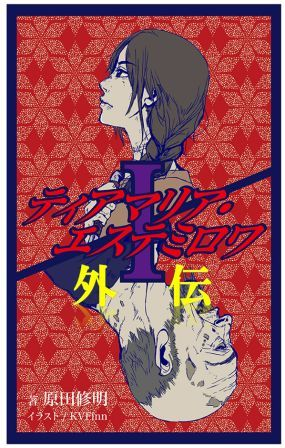
天の底が抜けたような雨が降りそそぐ初夏の夜、王城門が開くきしみは、雨音にかき消されていた。
王族のみが使う豪奢な真紅の馬車が、文字通り車軸を流す雨の中を、しずしずと走り出る。
尋常ではなかった。王族の馬車が、まるで逃げるように王城を後にしているのだ。
だが、その馬車に乗っているのは、
年のころは十代後半といったところで、つややかな黒髪を肩で切りそろえ、しっとりとした肌は磨かれた石のようだった。ほっそりとした肩に似合わず、下腹部が大きくつき出ている。妊娠しているのは明らかだった。
薄めの唇を引き結んだ少女の表情は、判然としない。
眼がふたつともなかったからである。
両眼のあった場所には、百合の刺繍を施した絹の
似合わないものはもうひとつあった。首に、双頭の鷲を模した金の首飾りが揺れている。少女が身につけるには、武骨すぎる代物だった。
ゆるゆると進む馬車の中で、少女の黒髪が揺れている。
赤髪の御者の帽子から、切れ目なく雨粒が落ちている。
御者が苦りきった顔をしているのは、雨中の御用だからではない。
王城の住人の中で、少女だけが黒い髪と黄色い肌を持っていたからだった。
御者は手綱を引いて速度を落とすと、慎重に、そして忌々しそうに角を曲がる。
敵の軍勢が一挙に王城に殺到できないように、城壁門から王城までの道のりはいくつも角を作ってあった。もっとも、王都に敵が最後に侵入したのは、もう七百年も前のことである。入り組んだ街路を、馬車はゆっくりと進んでいった。
少女は身じろぎもせず、黙って座っている。
しばらく走り続けた馬車は、城壁門の大階段の前で停止した。昼間であれば、巨大な桶のような王都をぐるりと囲む大城壁と、はるか上に設けられた城壁門にいたる、二十人が並んで歩けそうな大階段が見えるはずだった。
もっとも、少女は王都の姿を一度も見たことはない。
御者はいきなり扉を開け、豪雨の中を黙って立っている。少女に声をかけることもなければ、降りるのを手伝おうとするそぶりもない。
扉が開いたことに気づくと、少女は手探りであたりをまさぐる。すぐに、皮のマントが見つかった。翼のようにそれをはおり、万感の思いをこめて重そうな腹に手を当てる。
フードをかぶり、足探りで馬車を下りようとする少女に、御者は手を貸そうともしなかった。少女は妊娠しているというのに。
その待遇を、少女自身も当然と思っているようだった。
踏み外すように馬車を降りると、御者は舌打ちをして席にもどり、馬に鞭をくれる。回転する車輪が、少女の背中に盛大に水をかけていった。
少女は何かを探すように、顔の向きを変えた。城壁門で燃え続ける、松明の光を感じたのか、そろそろと歩き出す。
爪先が、階段を探りあてた。ゆっくりと、踏み外さないように登っていく。ときおり、ふくれあがった腹を抱えて息をつく。
長い時間をかけて大階段を登りきると、衛兵がふたり、槍を持って城壁門を守っていた。
衛兵たちは、少女が汚物であるかのような一瞥をくれただけで、
少女は王城を振り返った。眼の見える者には、ただ雨に煙る巨大な影があるだけのことだろう。しかし、少女には別のものが見えているのか、切なげに唇が開いた。
やがて、見えない糸を振りきるように、少女は前を向いた。門の両側で燃え盛るたいまつの間を、ゆっくりとすり足で歩いていく。
門をくぐった先には、雨衣のマントを身につけた中年の男が待っていた。口ひげと目尻のしわが柔和な印象を与えていたが、銀髪を短く刈りこんでいて、武の匂いがある。
「ナタリア様ですな？」
声をかけられた少女は、びくりと体を震わせた。
「......はい」
雨の音で、ほとんど聞き取れないほどの声だった。
「サアカシビリ家の戦士長、ミハイルと申します。
ミハイルは丁寧に頭を下げた。御者や衛兵とは、あまりにも態度が違っている。衛兵は、ミハイルが人糞を食べる趣味のある男であるかのように見つめていた。
「光を失っているという話は聞いていましたが、さぞご苦労されたことでしょう。さあ、お手を......」
ナタリアはおそるおそる手を出そうとして、引っこめた。
「わたくし、ウォランです......」
「そうですね。そう伺っておりましたし、ええ、今この目で確かめました」
それがなにか、というような顔をしていたミハイルは、得心したように手を打った。
「ああ、ご心配なく。我がゲオルギアでは、偏執狂のルーシとは違ってウォランにこだわりはありませぬ」
無礼な視線を投げている衛兵をちらりと見て、ミハイルはナタリアの手を取った。
「あっ......！」
ナタリアは声をあげた。
「王太子様からくれぐれもと言付けられております。憂うることは何もありませぬ」
ミハイルは、ナタリアが転ばないように気を遣いながら、ゆっくりと階段を降りて行った。しだいに、雨とは違う水音が混ざってくる。
王都は、大河の中に顔を出した広大な中洲の上に築かれていた。
ゲオルギアの軍船が、何十も並ぶはしけのひとつに
王城の物見塔から、精悍な若者が一部始終を眺めていた。燃えるような赤い髪を逆立て、緑の瞳には悔悟が浮かんでいる。
ナタリアは軍船に乗せられ、大河を下って海へと向かっていった。
それ以降、ルーシで彼女の姿の見た者はなかった。
今日、少女は両親に売られた。
王都から来た
少女の運命とは関係なく、高地特有の青く輝く空はあくまでも美しかった。季節は春になっていたが、遠くの山々はまだ山頂を白く彩っている。
十代半ばの少女は、皮脂で綱のように固まってしまった、ろくに洗ったことのない黒髪をおさげにして束ね、麻でできた粗末なワンピースを着ていた。
日に焼けて浅黒くなった黄色い肌の顔も、髪と同様に積年の垢がこびりついていたが、目は切れ長で鼻筋もとおっており、清潔にして身なりを整えればそれなりのものになりそうな顔かたちをしている。
「なあ姉ちゃん、名前は何てえんだい？」
赤い髪と白い肌の女衒が、後ろを向いて訊ねた。女衒は四十がらみの男だった。人の売り買いを長年してくるとこんな目になるのだろうか、媚びているようでいて油断のならない視線を少女に向けた。
まさか自分に話しかける者がいるとは思わず、少女は驚きから回復するのに数瞬が必要だった。
「な、名前は、ない......」
車輪が立てる音で消えそうなほどに、か細い声だった。
「ああ？ 何だって？」
聞き取れなかったのか、女衒は大きな声で問い返した。大声におびえた少女が話し始めるのに、また少し、時間が必要だった。
「お父さんも、お母さんも、家族の誰も、あたしを名前で呼んだこと、ない......村の人とは、話したこと、ない」
「ああそうかそうか、姉ちゃんウォランだもんなあ、そういうこともあるか」
女衒は一瞬きょとんとしたが、すぐに納得したのか、大声で笑い出した。
「にしても、姉ちゃん珍しいよな」
「え？」
「グロズヌイ伯領には何回か来てるけどよ、たしかここじゃあウォランってわかったら間引かれるんじゃねえのか？ よくその年まで育ったな」
女衒は話し好きらしく、ぶしつけな驚きをぶつけてくる。
「ヤ、ヤクを飼ってるから......」
「はあ？」
「か、皮を剥いだり、臓物を洗ったり、去勢をしたり、村のみんな、しない......あたししか、しない......」
「あー......なるほどなー。そういや間引きの話を聞いたのは街だったな。それじゃあ姉ちゃんがいなくなったらみんな困るんじゃねえのか？」
「む、村にもうひとり、ウォランの子がいる......その子が仕事、で、できるようになったから......」
「ウォランはできるだけ少ない方がいいってことか。それで売られちまったわけだ！」
女衒は可笑しそうに笑った。少女はなぜ彼が笑っているかわからなかったし、屈辱という感情さえも知らなかった。
「どうして、あたしたちだけこんな髪、なのかな......」
理不尽な扱いは所与のもので、それを理不尽だと思ったこともなかったが、必要なければ生まれてすぐに殺されなければならない理由は、知らなかった。
「はあ？ 何言ってんだ、それを知らねえルーシの民がいるもんか」
「誰も話しかけてくれないし、学校だって......い、行ったことないもの」
村の裕福な子供たちは、峠をふたつほど越えて学校に行っていたが、少女はそこで何をするのかよく理解はしていなかった。
「ウォランのことを知らねえのはウォランだけってか、こりゃおかしいや。ようし、オレが教えてやるよ」
女衒はまた心底面白い冗談を聞いたように笑うと、話し始めた。
「いいか、今から千年前、東から馬に乗った奴らがやってきたんだ」
「う、馬......って、何？」
「毛のないヤクのデカいやつだよ。本当に何にも知らねえんだな。まあいいや。で、そいつらが滅法強くてな、あっという間にルーシを占領しちまった。国がなくなっちまったわけだ」
女衒は、声を出すことそのものが楽しいらしく、上機嫌になってきた。
「そいつらは自分らをウォランって名乗ったんだ。姉ちゃんみたいに黒い髪と黄色い肌でな、つり目だったんだよ。さて、戦に勝った奴らが、負けた国を完全に滅ぼすためにはどうしたらいいのかねえ？」
国という存在など意識したこともない少女は、黙って首を振るだけだった。
「男は殺して、女は混血を産ませるのさ。そうすれば、何十年か経てば純粋なルーシの民はいなくなる。ウォランは三百年、それをやった」
おとぎ話のように、女衒は陰惨な歴史を語った。
「まあ悪は滅びるってやつで、ウォランは勇ましき我がルーシの民によって、追い出されたわけだ。それが今から七百年前な。そんときのウォラン討伐軍の長が今の王家で、部下の末裔が貴族なんだよ」
「あ、あたしは、そのウォランの子孫ってこと......」
「まあそうだ。ご先祖さまはよっぽど腹にすえかねたのかねえ、ルーシの純血を取り戻すのに躍起になって、やられたことの逆をやったんだな。混血には子孫を残すことを許さず、黒い髪と黄色い肌を持った赤ん坊が生まれれば、皆殺しにした」
少女の背中に寒気が走る。村がウォランさえ労働力として使わなければいけないほどの極貧でなければ、おそらく生きてはいなかった。
「その成果が出てきたのかねえ、何百年か経って、生まれてくるのはほとんど赤い髪と緑の瞳の、純血ルーシの民になった。でも、あれから七百年経つのに、まだ生まれるんだよな、姉ちゃんみたいなのが」
女衒が意地悪な笑みを浮かべて振り向く。少女は生まれてきたのが罪だと言われているような気がして、身をすくませた。
「今でも、赤ん坊が生まれたときにゃあ、親父は『白か黄色か』って聞くだろ？ よその国じゃ最初に『男か女か』って聞くんだぜ！ 知らなかっただろ」
確かにそうだった。少女のあとにウォランの子供が生まれたとき、父親は地面に伏して神を呪う言葉を吐いていた。この場合だけは、それを咎められることはない。
「黒い髪も黄色い肌も、千年前の呪いみたいなもんだな。まあ、穴さえついてりゃ白だろうが黄色だろうが売れるからな、オレにはどうでもいいけどよ」
女衒は職業上の美徳として、肌の色には寛容だった。
「だけど、千年ってのは大概長いのかね。王都じゃあ、今の王様に代わってから、ウォランの名誉剥奪の法律をなくしたんだよ。もう十五年前にもなるが、人の心が変わるにゃあ、ちょっと短えな」
少女の住んでいたグロズヌイ伯領では、ウォランとの関わりあいについて、いくつか法律が定められていた。
ウォランが死亡した場合には、家族以外の者が棺を運んではならない。
ウォランと話したり、食事を同席した者は、名誉と権利を剥奪される。
ウォランを吊るす場合は、逆さ吊りにする。この際、犬を共に吊るす。
ウォランの女が妊娠した場合、吊るされる。
ウォランの男が名誉ある者の母、妻、娘を妊娠させた場合、両者とも吊るされる。
ウォランからすべてを奪い、その血を根絶したいという執念こそが、ルーシの呪いと言ってよかった。
もっとも、名誉と権利を剥奪されるのはウォランだけではない。
殺人、夜間の盗み、強姦などの重犯罪を行った者は、ウォランと同様の立場に落とされる。
少女が感じたとおり、ウォランは生まれ、存在していることが罪であると法律で規定されていた。
「ど、どうして、王様は、法律をなくしたの？」
ウォランに名誉と権利を与えようと思う人間がいることが信じられなかった。ましてやそれはルーシを統べる王なのだ。
「王様の思し召しなんか知らねえよ。ウォランの女を侍女にしてたって噂もあるけどな、まあいくらなんでもウソだろ。若いころは王城を抜け出しちゃあ、さんざん暴れてたらしいがね」
王がウォランを侍女にするなど、やはり嘘だと思った。村では少女に口を聞く者さえいなかったのだから。
「これで昔話は終わりだ。王都に着いたら、風呂に入ってさっぱりして、舞台に上がってもらうからな」
風呂というものも舞台というものも、聞いたことがなかった。
好奇心は湧かない。今まで初めて知るものは、すべて自分を傷つけるものだった。きっと今回もそうなのだろう。
傷つけなかったのは、宇宙を透かして見せるような色の空と、駆け抜ける風だけだった。それだけが、少女が愛するものだった。今、それとも別れて王都へと連れて行かれている。
この空は王都まで続いているのか、と不安になった。
高地の荒々しい風が一陣、吹きつけた。風だけが、少女へのはなむけだった。
王都までは、五日間の道のりだった。
この五日間は、生涯で最も安らいだ贅沢な時間だった。食事も水も女衒が用意してくれるし、土間に直接寝なくてもいい。暗い時間から蹴り起こされ、ヤクの血にまみれなくてもいい。
なにより、村人や家族からのいわれのない怨嗟の目を気にする必要もない。
「あと半日で王都だぜ」
そう女衒に言われたころ、不思議な香りを嗅いだ。少女が初めて経験する匂いだった。たとえるなら、ヤクの血をまろやかにして薄めたものに近かった。
「こ、このにおい、なに......？」
「海が近いんだよ。まあ見たことないよな」
「う......み......？」
「でっかくて塩っ辛い水たまりさ」
「水が......塩辛いの......？」
「そうさ。この香りがしてきたら王都まで半日ってとこだ」
想像もできなかった。王都の人たちは塩辛い水を飲んでいるのだろうか、と思った。
午後になって、ヤク車から下ろされた。
目の前には、深い色の大河が悠々と流れている。中の島に巨大な城壁が大河を見下ろすようにそびえ、それ自体が石の要塞だった。下流に目をやると、流れの先にはただただ広大な水があり、その果ては空とつながっていた。海だった。
「さあ、この川を渡れば王都だぜ」
女衒に渡し船へとうながされた。初老の船頭が櫓を握っていたが、少女を見てあからさまに顔をしかめる。とはいえ乗船を拒否されることもなく、生まれて初めて船に乗ることになった。
「わ......なに......揺れる......！」
船べりにしがみつく少女を、船頭は苦々しい顔つきで眺めていた。
王都は古くから貿易港として栄え、流通の中心となってきた。大河に挟まれた巨大な三角州の上に建てられ、四方を川と海に囲まれているため、防御は非常に堅い。千年前、騎馬民族であるウォランはこの大河を渡るのに難渋し、占領した海沿いの村から船大工を徴集して船を作り、ようやく渡ったという。
いまだに橋はひとつも架けられていない。橋を作る技術がないわけではなく、敵の侵入を防ぐためである。敵が船団を組んで渡ろうとしたところで、城壁の上から火矢を射かければ、渡りきれる船はない。千年前は、まだ城壁はなかった。
中洲へたどりつくと、船頭は桟橋に船をつけた。いくつもの桟橋が、石を積み上げた護岸から突き出していて、大河を行き来する人々で賑わっている。
女衒は船頭に渡し賃を放り投げると、城壁を指さした。
「ほら、この階段のてっぺんに門があるだろ？ あの向こうが王都だ」
五十段ほどの階段を見上げると、巨大な門がそびえており、その前には槍を持った衛兵がふたりで警護をしていた。
「洪水や水攻めに備えて、あんな高い所に門を作ったんだってよ」
洪水も水攻めも知らなかった。黙って女衒の後について、階段を登っていく。
「おつとめ、お疲れ様で......」
城門をくぐるとき、女衒は衛兵に頭を下げた。少女も頭を下げたが、返ってきたのは汚物を見るような嫌悪である。薄汚い姿を差し引いても、それが少女を見たときの通常の反応だった。
門の向こう側を見て、少女の口から感嘆の声が漏れた。
「わあ......」
眼の前に、王都を一望できる絶景が広がっている。
王都は、少女の知る色彩、つまり空の青、雪の白、草の緑、土の黒以外の、見たこともない華やかさで埋め尽くされていた。
赤や黄色の瓦で葺かれた建物。
街の至る所に屹立する、ステンドグラスで装飾された尖塔。
思い思いの鮮やかな色の服を着ている老若男女。
そして正面にそびえる白亜の王城。
「あ、あたし、ここで暮らせるの？」
「どうだかな。まだわかんねえな」
王都の壮麗さに度肝を抜かれた少女に、女衒は頭を掻いて答えた。
「行くぜ。階段の下で、みんな待ってるはずだ」
女衒が階段を降りていく。桟橋から登った分は下がらないと、地面にたどりつけなかった。王都は、巨大な桶の底に街を作っているようなものだった。
「みんな......って？」
「そいつらと一緒に、舞台に上がるんだよ」
わけが判らずとも女衒についていくしかなかったが、王都のうるわしさは生まれて初めて希望というものを感じさせてくれた。
階段の下には、ロバが二頭で引く、ほろ付きの荷車が止まっていた。女衒は噛みタバコを噛んでいる御者に、気安く声をかける。
「よう、待たせたな」
「待たせたなじゃねえ、お前が最後なんだよ！ で、アレがお前の仕入れたタマか？ よりによって汚えウォランじゃねえか！」
意地悪そうな髭づらの御者は女衒の顔見知りらしく、同業者の匂いがした。
「今日びウォランもだいぶ減っちまったからな、スキモノの旦那が高い値をつけるんだよ。それに俺の目に狂いはねえ。あいつは上ダマだぜ」
「ふうん......まあいい、とっとと乗せろよ。夕方には始まっちまうからな」
あいよ、と女衒が答えると、少女に向き直った。
「ここで一旦お別れだ。荷車に乗ってくれ」
「お別れ......？」
「なあに、風呂に入ってさっぱりしに行くんだよ。姉ちゃんが舞台に立つとこは俺も見届けなくちゃいけないからな」
この五日間の旅で、女衒に好意を持っていた。女衒は自分を虐げ、怨嗟を向けることのない初めての人間だった。わずかな時間とはいえ、女衒と離れるのは不安だった。
「でも......」
「何をもたもたしてやがる！ さっさと乗らねえか！」
髭面の御者の怒号に、身を縮める。
いそいそと荷台に乗り込むと、五、六人の少女が座っていた。幼い者は十歳くらい、最年長は少女より二、三歳年上に見える。ウォランは自分ひとりだけだった。みんな一様に暗い顔をしていて、一番幼い少女はしくしく泣いている。全員が、荷台とつながった鎖の足輪をくくりつけられていた。自分たちの真っ暗な未来に必死で目をこらしているのか、ウォランが乗りこんできたことにも無頓着だった。
「ま、信用問題なんでな。慣れたもんだろ？」
女衒は顎で鎖の足輪をしゃくった。少女は何のためらいもなく、自分で足輪をはめる。
「じゃ、また後でな」
足輪が少女の足首にしっかり巻かれたのを点検すると、女衒は荷台から離れた。
直後に、ごとりと車輪が回る。
どこへ向かうのかはわからないが、荷車が動き始めた。
ほろをかけた荷台からは真後ろしか見えないが、初めて見る王都の風景に釘づけになった。
海洋貿易都市らしく、王都には様々な人種がいる。
金髪の者。銀髪の者。肌の色の黒い者。
それぞれの人々が、それぞれの国の服を着て歩いていた。
どこの国の服でもない、ただ汚れた毛布をまとっている者もいた。それは例外なく、少女と同じウォランだった。
王都には、ウォランから名誉と権利を剥奪することを定めた法律はないが、ただそれだけだった。
ほろの中にいる少女たちは、誰ひとりとして口をきかない。少女も黙っていた。女衒以外に話しかけるのは怖かった。
しばらくして、ロバのいななきとともに、荷車が止まる。
「さっさと降りろ！ 逃げたりしたら承知しねえぞ！」
髭面の御者が怒鳴った。少女たちは足輪を外され、外に降ろされる。
目の前に、煉瓦でつくられた建物があった。白い煙を吐く煙突が、ひときわ目立つ。
ぼんやりと見上げていると、後ろから小突かれた。
「なにぼーっとしてんだ！ とっとと入らねえか！」
御者の怒声を背に受けて、慌てて両開きの扉を開けた。
建物の中にはもう一つ扉があり、二重扉になっている。奥の扉を開けると、むわっと熱い湿気が吹きつけてきた。
「わあ......っ」
「早く閉めんかね。冷えちまうじゃないかい」
扉の中に、腰巻を巻いただけのしなびた老婆が立っていた。乳房はへちまのようにへそまで垂れ下がり、先端には黒い乳首がぽつんとついている。
「なんだい、ウォランかね。しかもとびきり汚いときたよ。ほんとに今日はついてないねえ。まあいいさ、脱ぎな」
「え......？」
扉を閉めた少女は、思わず聞き返していた。
「その年でアタシより耳が遠いのかい。全部脱げって言ってんだよ」
「ど、どうして......」
老婆は心底軽蔑した目つきになった。
「風呂に入るのに服を着てるもんがあるかね。それともウォランは風呂を知らないのかい」
少女はおずおずと頷いた。夏の間は、川で時折水浴びすることもあったが、風呂は入ったことがない。
垢掻きの老婆は、観念したように首を横に振った。
「とにかく、そのままじゃ売り物にならないからね。きれいにしてやるから脱ぐんだよ」
まわりを見ると、一緒に連れてこられた少女たちも、全裸になって洗われていた。
人前で裸になったことなどなかったが、女たちしかいないこともあり、しぶしぶ脱いだ。
少女の肢体は長年の粗食で痩せており、ささやかな乳房の下には肋さえ浮いていたが、毎日の重労働で鍛えられたためか、貧弱な印象はなかった。
「そこに座んな」
老婆が顎をしゃくると、木製の簡素な椅子があった。少女は黙って従う。
その瞬間、頭からお湯をかけられた。
「ひ......いっ......！」
「変な声出してるんじゃないよ。それにしてもなんだい、この髪は？ まるで綱じゃないか。どれだけ洗ってなかったらこんなになるんだい」
老婆は、おさげをほどこうとしていたが、皮脂で固まった少女の髪に随分と手こずっているようだった。
やっとのことで髪をほどくと、またお湯をかけられた。老婆の指が頭皮をこすり、髪をほぐしていく。甘い匂いがほんのりと漂った。
「石鹸も全然泡立たないよ。ほんとに汚いねえ」
そう言いながらも、老婆の手つきは巧みで、他人に体を洗ってもらうという初めての経験にうっとりとなった。
老婆はヒョウタンの繊維で、文字通り隅々まで洗ってくれた。尻の穴にさわられた時は、思わず声を上げてしまったが。
「垢で人形ができちまうよ」
目の詰まったヒョウタンを洗う老婆の声に、恥ずかしさで血が昇った。
最後に絞ったタオルで顔を念入りにこすられ、背中をぴしゃりと叩かれた。
「終わったよ......へえ、なかなかの上玉じゃないか」
老婆は驚きの声を上げた。
垢と汚れを落としきった顔は、切れ長の目とすっと通った鼻すじが調和している。肌もきめが細かく、ルーシの女の特徴はひとつもない。
きれいに洗われた黒い髪には神秘的なつやがあり、おさげのくせが残った先端から水滴が落ちていた。
「ほら、みんなについて行きな」
老婆に毛布を押し付けられると、あわてて裸体を隠した。
見ると、入った扉とは別の扉へ少女たちが連れていかれている。
列の最後尾につくと、暗く狭い板張りの通路をしばらく歩かされた。
「先頭の娘だけ来い。他はここで待っていろ」
先導していた中年の男が、先頭にいた年長の少女を連れていった。しばらくすると、十歳ほどの少女が腕を引っ張られ、泣き声とともに廊下の奥に消えていった。次々と少女が連れて行かれ、最後に残っているのは自分一人となった。もちろん、逃げないようにずっと屈強な若者が睨んでいる。
「お前で最後だな。来い」
中年の男に連れられて歩いて行くと、通路の先に光が見えた。かすかに、ざわめく声がする。人がいるのだろうか。
光の中に出ると、眩しさに目がくらんだ。同時に、大きなどよめきが体を打つ。
目が慣れてくると、自分が薄暗い建物の中の、小さな舞台に立っていることが判った。そして、舞台の下では身なりの良い男たちが数十人、興奮した目つきで何やら喚いていた。
異様な熱気の毒に当てられて、頭から血の気が引いていく。
「よう、姉ちゃん。やっぱり思った通りの上玉だったな」
「え......？」
見ると、王都まで連れてきた女衒が、演台に手をついて立っていた。
「さあて、紳士の皆様方、ここにいるのは我がルーシの不倶戴天の敵、ウォランの娘でございます。だが見てのとおりの上玉だ。思う存分なぶるもよし、打ち殺して憂さ晴らしするもよし......」
この五日間、世話を焼いてくれた女衒の言葉に愕然とした。舞台の下からは、非情な野次が矢のように飛んでくる。
「貴様の口上などどうでもよい！ そいつの裸を見せろ！」
「へいへい、ごもっとも、ごもっとも。ではご覧あれ」
そう言うと、女衒は少女の裸体を覆う毛布をはぎ取った。
「いや......！ や、やめ......」
舞台の下から、感嘆ともため息ともつかぬ声が上がった。
何十人もの男たちからの視線に耐えきれず、胸を隠してしゃがみこんでしまう。
「姉ちゃん、いきなり御開帳かい？」
女衒の言葉にはっとした。男たちの視線はすべて、しゃがむことによってさらけ出された、股の底に注がれている。
「きゃあっ！」
立つしかなかった。
「さあ、金貨二枚からいきますよ」
女衒の言葉を合図に、セリが始まった。
「三枚！」「四枚！」「五枚！」
次々と値がつけられていく。恐怖と恥ずかしさで脚が震える。女衒や老婆が何度も言っていたにもかかわらず、売られるという意味をまったく理解していなかった。
のどかな旅のやすらぎや、体を洗ってさっぱりしたひとときの喜びは、霧のように消えた。女衒の口上通り、一旦買われたら殺されようがなぶられようが持ち主の思うままだ。
「さあ五枚！ まだないか！」
女衒がうれしそうに男たちを煽る。女衒が自分の世話を焼いていたのは、売り物に傷をつけたくないという理由しかなかったことにようやく気づいた。
「七枚！」
「さあ七枚！ なければあの紳士で決まりですよ！」
「十枚！」
会場が大きくどよめいた。
「出ました十枚！ ありませんか！」
それ以上の声は上がらなかった。
「決まりました！ では商品をお受け取りください！」
舞台に、贅沢な服装をした、年老いた猿に似た男が上がってくる。何の前ぶれもなく、乳房を強く掴まれた。
「あうっ......！」
「ふむ、ウォランの肌は絹のような手ざわりだと聞いていたが、思った以上だな」
猿に似た貴族は手ざわりを確かめるように、無遠慮に揉みしだいた。手の動きと連動するように呼吸が荒くなり、眼が脂を塗ったように光ってくる。胃液と煙草の混じった、耐えがたい口臭が鼻を突いた。
「い、痛い......！」
あまりの痛さに声をあげると、女衒が割って入った。
「失礼ですが、お楽しみはお代をいただいてから......」
女衒が卑屈な目で、上客を見上げる。楽しみを邪魔され、貴族が不機嫌な顔で金貨袋を投げつけると、女衒は中身を確かめて満足そうに笑った。
「さあ、来るんだ」
貴族に腕をつかまれ、一糸まとわぬ裸のまま、舞台から引きずり下ろされた。
「いや......！ せ、せめて服を」
訴えは全く無視された。何十人もの男たちの好奇の視線の中を、裸のまま連れまわされる。
老猿は、そのまま外に出ようとした。
「そ、外は、やめて......！」
手の甲が、少女の頬を打った。
「いい加減にしろ。お前はわたしに買われたんだ」
ひりひりと熱を持った頬を押さえ、絶望的な瞳で貴族を見上げる。
「で、でも、王都にはウォランの法律がないって......」
「確かにな。忌々しいことだが、王都ではウォランが酒場に入ってもいいし、教会に埋葬もされる。だが何色だろうと奴隷は奴隷だ。奴隷にいかなる名誉も権利もない」
老猿は傲然と言い放った。村にいた時よりも、はるかに過酷な運命に落ちたことをようやく悟らざるを得なかった。
もう、貴族が引く手に逆らう気力は、ない。
「あの旦那、月に一回は娘を買いにくるよな。ちょっと壊すのが早すぎるんじゃないかね。そのぶんたくさん買ってくれるからいいけどよ」
奴隷市場を出ていく貴族に聞こえないように、ほくほく顔の女衒がつぶやいた。
少女は裸のまま、王都の大通りを連れ歩かれた。
「見ろよ、また師団長が女を引きずりまわしてるぜ。もう名物だな」
「今日のはまた上玉だな！ あいつを好きにできるのか......まったくあやかりたいもんだねえ」
「ママ、どうしてあのお姉ちゃん裸で歩いてるの？」
「しっ、見ちゃだめよ」
様々な声が、人が、少女を取り囲んでいた。師団長と呼ばれた貴族は、注目を浴びれば浴びるほど、誇らしげになっていくようだった。
村にいた時は名前も与えられず、人が嫌がる仕事ばかり押しつけられていたが、ここまで公然と辱められたことはなかった。村の人々はウォランを忌み嫌ってはいたが、それゆえに接触が最小限になっていたからだ。
人々の好奇と蔑みの視線が、剥き出しの素肌に突き刺さる。
身体の一切を隠すことができず、すべてを民衆の前にさらしていた。
もちろん、とがめる物好きなどいるわけがない。誰もがこの見世物を楽しんでいた。
少女は地面だけを見ていた。痛みさえ感じる大観衆の視線を認識したとたん、身体が粉屑になって崩れてしまいそうだった。
涙が頬を伝い、首から小さな胸に流れて消える。
耳の中できいんと音がする。近い未来に訪れる、ヒトの身では負いきれないほどの辱めでさえ、今与えられている恥辱のために思いが至らなかった。
恥がこれほど痛いものなら、すぐ死んでしまいたいとさえ思った。
不意に、貴族が立ち止まる。
「なんだ貴様は！」
顔を上げると、少女と同じ黄色い肌の男が立ちはだかっていた。年は五十を過ぎているだろうか。洗濯しただけでバラバラになりそうな、元の色の判らなくなったぼろをまとっていた。
「おぬし、どういういきさつか知らんが、無体が過ぎるのう。天下の往来で
男は異相だった。まず頭に髪は全くない。それだけなら珍しいというほどでもないが、眼が特異だった。顔は貴族の方を向いているのに、両眼はそれぞれあらぬ方向を向いていた。
さらに男には、左肩の先から腕がなかった。右腕一本で、身の丈の倍はあろうかという槍を肩にひっかけている。
この槍がルーシでは見たこともないような代物で、両刃の剣の柄をぐんと引き延ばしたような形状をしていた。突くだけでなく、斬ることも容易にできそうだった。
「この娘はわたしが買ったのだ。 下郎にとやかく言われる筋合いなどない！」
「ほう、その女子は奴隷か。じゃが、一寸の虫にも五分の魂という。服ぐらい着せてやったらどうじゃ」
隻腕の男は貴族に対して言っているのに、その視線はどちらも老猿をとらえていなかった。不気味な男に無駄な足止めをされて、貴族は目に見えて苛立ってきていた。
「下郎、ウォランの分際で図々しいにもほどがあるぞ！ わたしを誰だと......」
びょうと風を斬る音ともに、師団長は横倒しに地面に落ちた。槍の柄で足を払われたのだが、少女には見えなかった。
隻腕の男は、槍先を横たわる老猿の喉元に突きつけた。
「ワシは
貴族は突然訪れた命の危機に、骨がらみの傲慢さも忘れて顔をひきつらせた。
「ところでその娘、ワシにゆずらぬか。買った値を払ってやるわい。もしそれで足りぬのなら、この槍を馳走してやってもよいぞ」
穂先がちくりと、喉に触れた。
「ひっ......！ き、金貨十枚だ」
「ほっ、豪気じゃのう。まあいいわい」
そう言うと隻腕の男は槍を引き、器用に首で押さえると、懐から革袋を出して投げ渡した。だが貴族は受け取らず、じゃりんと音をたてて革袋が落ちる。
「そ、そのような穢れた金が受け取れるか！」
貴族は脚を震わせて子鹿のように立ち上がり、異相の男に背を向けると、群衆を怒鳴り散らしながら去っていった。
隻腕の男は革袋を拾うと、つかつかと少女の前にやってくる。
あらぬ方向に散った男の眼は間近で見ると、黄色く濁った白目がぬめっていて、一層不気味だった。
「ほれ、大丈夫か？」
男は、着ていた黒いぼろを少女にかけた。古くて濃い汗と、長旅の土の匂いで、鼻が曲がりそうなほど臭い。
「なんだよ、つまんねえな......」
周りにいた見物人たちは、見世物が突然終わってしまったことに興をそがれたのか、三々五々に散っていった。
「......あたし、今度はあなたに買われたの......？」
少女はうつむいたまま、つぶやいた。希望などなかった。自分の持ち主が、猿のような貴族から、妖怪のような中年に変わっただけなのだと思っていた。
ひゃひゃひゃ、と隻腕の男が笑う。
「まあそういうことかのう。古着屋へ行くか。その恰好じゃ何も出来ぬわい」
隻腕の男はすたすたと歩き出していった。少女がついてくるか確かめもしない。
逃げることは簡単だったが、身にまとっているのは隻腕の男がよこしたぼろ一枚だけだった。たとえ逃げたところで、見知らぬ王都に行くあてはない。 しょうがなく、男の背中を追っていった。
長槍を担いだ男の後ろを、ぼろをまとったウォランの少女が歩く。すれちがう人々は、例外なく害虫を見たような嫌悪を投げつけていった。
しばらく歩いて、男は古着を売っている露店の前で止まった。
「おぬし、好きなものを選んでええぞ」
男が初めて振り向いた。
少女は今まで貧相な麻の服しか着たことがなく、古着とはいえ、服に種類がこれほど多くあることに驚いていた。
「どれを選んでも......いいの？」
選ぶという行為は、少女の人生に無縁のものだった。未知のものと既知のものは、例外なく蔑みと怨嗟を少女になすりつけ、それを拒否するなど考えたこともない。
「そうとも」
隻腕の男は、笑顔のような奇妙な顔相になった。
並べてある服に手を伸ばそうとすると、古着屋の親爺があからさまに嫌な顔をする。
おずおずと、手を引っこめた。
様々な色や飾りのついた服が並んでいたが、少女は結局、何とか自分でも着ることが許されそうな服、平民の女が着るような木綿の長袖とひざ丈のスカート、かかとが隠れる程度のなめし皮の靴を選んだ。
「それにするかの？ おい親爺、釣りはいらぬぞ」
男は銀貨を一枚、親指で弾いた。
ふたりの黄色人種が店の前に立ってから、ずっと苦々しい顔をしていた古着屋は、驚きの笑顔で銀貨を受け取った。
商人にとっては穢れた金というものはなく、金はただ金であるらしかった。
「その辺の影で、着替えてきたらどうじゃ」
少女は不安げに頷くと、建物の影へ走っていった。誰も来ないことを確かめて、ぼろを脱ぐ。師団長に連れまわされているときには感じる余裕もなかったが、王都の風は暖かかった。
急いで長袖を着て、スカートと靴をはいた。脚の間が頼りないが、全裸に比べたら天国と地獄より違う。
男が貸してくれたぼろを拾い、ほこりを払ってきれいに畳んだ。
「ほうほう、こりゃなかなかのもんじゃな」
少女が戻ってくると、異相の男はにやりと笑った。
いきなり褒められて、少女の顔が薄く染まる。
「あ、ありがとう......どうして、あたしを、助けてくれたの......？」
「なあに、ただの気まぐれじゃよ」
隻腕の男はぼろを受け取ると、槍を肩に乗せたまま器用に羽織った。
「あとは好きにするがええ。ここで仕事を見つけるもよし、家に帰るもよし、じゃ」
そのとき、少女の胃が妙音で空腹を訴えた。いつの間にか、夕方になっている。今日は朝に食べたきり、何も口に入れていなかった。
「しょうがないのう。他生の縁じゃ、食わせてやるぞい」
また少女の顔が赤くなった。男の面相がまともに見られないものであることは確かだが、怖いと思う気持ちは湧かない。
隻腕の男と一緒に、街をぶらぶらと歩いていく。ついさっきまで、見世物にされていた街とは全く違う顔だった。沈みゆく太陽が長い影を作り、街は穏やかに今日を終えようとしていた。
男の槍がときどき、歩いている人たちにぶつかりそうになる。嫌な顔をされても、全く気にしていないようだった。
「あそこにしようかのう」
隻腕の男が顎でしゃくった先には、石を積み上げ、漆喰で固めて造られた簡素な建物があった。入口からは温かな光が夕闇を照らし、酔漢の楽しげな笑い声と、肉の焼ける匂いがあふれてきていた。
男の背中に隠れるように、おそるおそる入っていく。
ふたりの黄色人種を見た客たちの声は、一瞬低くなったが、すぐ何事もなかったかのように騒ぎ出した。
隻腕の男は、壁際のテーブルを選び、壁に槍を立て掛けた。天井がなく梁がむき出しで、男の長い槍でもつっかえることはなかった。
「あたし、こんなところはじめて......」
少女は隣のテーブルで湯気をたてている煮込みや、壁に貼ってあるふくよかな女の絵に眼をやりながら、隻腕の男の向かいに座った。
「おぬし、食べたいものはあるかの？」
「え......黒パンと、水......」
少女がいつも食べているものを答えると、ひゃひゃひゃ、と男は奇妙な大笑をした。
「麦酒と鶏の煮込みも頼もうかのう。おぬしも食うてよいぞ」
不機嫌そうな中年の女中を呼びつけると、男はいくつか注文をした。
すぐに、木製のジョッキに注がれた麦酒、牛乳で煮込まれた鶏肉の大皿、そして黒パンを並べたバスケットが運ばれてきた。料理を運んできた女中は忌々しそうな顔をしていたが、その不機嫌の余波は乱暴に置いた麦酒が少しこぼれただけにとどまった。
「すごい......村じゃこんなの食べられるの、お祭りのときぐらい......あたしは食べさせてもらえなかったけど」
祭りの輪から外れたところにある闇は、ひときわ暗かったことを思い出す。
「そうかそうか、好きなだけ食うたらええ」
少女はさっそく、大きな木のスプーンで鶏肉の煮込みをすくい、自分の皿に取って、鉄のフォークで大きな肉の塊を口に入れた。
「おいしい......！」
自然に声が出た。
肉などヤクの臓物以外、ほとんど食べたことがなかった。鶏肉と牛乳の旨味が体にしみこんでいく。芯から震えるような快感だった。
「ところで、おぬし名はなんという？」
隻腕の男が訊ねた。
「え......名前は、ないの......」
「ほう？」
「あたし、ウォランだから、お父さんもお母さんも、名前、つけてくれなかった......」
少女はうつむいて、答えた。
「おぬし、ホンモノのウォランを知っておるか？」
「えっ......」
男の不思議な問いに、少女は顔を上げていた。
「あ、あたしのことじゃ......ないの？」
「おぬしはこの国で生まれたのじゃろう？」
「う、うん......グロズヌイ伯領で......」
唯一の右手で麦酒をぐびりとあおると、男は苦笑に似た表情を浮かべた。
「おぬしはニセモノじゃ。ウォランに似ておる、ルーシの民じゃ」
「どういうこと......？」
「ホンモノのウォランとは、東の果てで羊を追い回して細々と暮らしておる、みじめな連中の事じゃ。大帝国なんぞ何百年も前のことよ」
「ウォランの国が、まだあるの......？」
「そうじゃ。そやつらはこのワシ、
「ホン......ダ......何て言ったの？」
「平八でよいわ。さっき言うたかの、ワシは渡難という、ウォランの国よりさらに東の、海を渡った先にある国の生まれじゃ。
平八は、ひゃひゃひゃと笑ったが、少女がつられて笑えるような話ではなかった。
「なんとか大陸に流れ着いたのじゃが、持っておったのは槍一本じゃ。それから
四十年前に拾った右腕で平八は麦酒を流しこみ、牛のようなげっぷを吐いた。
「初めて来たときは、このワシをウォランと間違えてのう、麦酒をしびんで出されたわい。それで大暴れしてやったんじゃ。今は多少マシになったようじゃのう」
正直なところ、平八はウォランそのものに見えたが、少女にそれを指摘する勇気はなかった。
「でも、王都だけみたい......あたしの村は、ウォランと一緒にごはんを食べたら、名誉を奪われるとか、いろいろ掟があった......」
「ふむ......その若さでだいぶ苦労したのじゃな」
平八の眼は両方とも少女の方を向いていなかったが、ひどく優しい声だった。
眼に、潮のように涙が満ちてきた。今まで、ウォランとして生まれた運命に同情をよせる者など、ひとりもいなかった。民族の忌まわしい記憶に加えて、法に背いてまでウォランに気を使うことなどありえなかった。
「あたし、これからどうしたらいいのかわからない......村には帰れないし、王都で見たウォランは、みんな物乞いだった......あたしも、物乞いになるしかないの？ それとも、誰かの奴隷になるの？」
涙があふれる。今まで、泣言を聞いてくれる者などいはしなかった。生まれて初めて同情を寄せてくれた平八に、不安を受け止めてほしかった。
「うむ......」
平八の眼は別々の方向を向いていたが、顔は壁を向いている。何かが書かれた羊皮紙を見ているようだった。
「ほう？ ルーシは随分と、変わったことをするようになったのう」
「え......？」
「ほれ、読んでみい」
平八は、羊皮紙を顎でしゃくった。涙を袖でぬぐい、そちらを見る。
「あたし、字を習ったことなんて、ない......」
羊皮紙には、意味不明な模様が何列も書きこまれていた。まったく理解できないことが寂しくて、ため息がこぼれる。
「来年から、王都に陸軍士官学校を作って、初級将校を養成するそうじゃ。ゲオルギアとの
「ゲオルギア......？」
「学問のある者か、旅するものでなければ知らぬじゃろうが、ルーシの東にはゲオルギアという銀髪の連中が棲む国がある。ワシも行ったことがあるが、なかなかの
「戰......？ そんなことしてるなんて、ぜんぜん知らなかった......」
「グロズヌイはゲオルギアの隣じゃぞ。まあ、あの山を軍勢が越えてくることは無いじゃろうがな。ゲオルギア側からしか見たことはないがの」
「そうなんだ......あたし、なんにも知らないね」
故郷の青く輝く空と、神々の座ともいえる雄大な峰々の姿を思い浮かべた。あの山のむこうにある世界など、想像もできない。狼でさえ越えられない山を、ヒトが歩いてこれるとは思えなかった。
「ふうむ......」
平八は斜め上を見上げ、何か考えているようだった。
「そうじゃ、おぬし士官学校に入らぬか」
「えっ......！」
飲みこみかけた黒パンが気管に入り、激しく咳きこむ。
「軍に入れば、メシは喰わせてくれるぞ。士官ともなれば、ひとかどの者じゃ」
「あたしが？ む、無理だよ......ウォランなのに、女なのに、なれるわけない」
ウォランに許されるのは、誰もしたがらない汚れ仕事か、物乞いだけというのが知る限りの現実だった。
「ふむ......入るために『武ノ術ヲ試問ス』とあるのう。『受クルル者斯クノ如シ』の次には、ひとつしか書いておらぬ。『るーしノ民ナラザルヘカラス』それだけじゃ」
「ウォランはダメって書いてないの？ あたりまえのことだから、わざわざ書いてないんじゃないの？」
「おぬしはグロズヌイ伯領で生まれたと言うておったな？ さっきも言うたじゃろう、おぬしはウォランに似とるだけの、ルーシの民じゃ。布告を素直に読めば、おぬしが受けても構わぬはずじゃ。やってみるか？」
少女の心臓がどくんと跳ねた。痛いほどに、心を突き上げてくる。人生に、かすかな光明がきらめいたような気がした。
「あ、あたし、武術なんてやったことないし、字だって読めない......学校なんか、行けるわけないよ......」
弱々しい言葉とは裏腹に、少女の腕には鳥肌が立ち、希望という初めて出会ったものへの昂奮のためか、全身がかすかに震えていた。
平八が、口端を大きく曲げた。
「ワシが槍を教えてやろう。字は入ってから覚えればええ。それとも、物乞いのほうがええかのう？ 楽といえば楽じゃからの」
昼間、裸で街を引きずり回されたことが鮮やかに思い浮かぶ。胸の奥に熱い感情が生まれ、たちまちに口からほとばしった。
「いや！ あたし、物乞いにも、奴隷にもなりたくない！ 平八、あたしに槍を、教えて......お願い、します......」
少女は立ちあがって、深々と頭を下げた。平八は麦酒を飲み干すと、満足そうに息をついた。
「よしよし、ワシは厳しいぞ......そうじゃ、おぬし、名前がないままではいかぬのう。ひとつ、ワシがつけてやろう」
「名前......？」
顔を上げると、平八はあらぬ方向を眺めて考えていた。
「よし、ティアマリアはどうじゃ？」
「......ティアマリア......？」
「異国の酒の名じゃ。おぬしの髪と同じ、漆黒の色をした、な」
「あたしは......ティアマリア......！」
強烈な震えが湧きおこる。抑えるように、両手で自分を抱く。名前を得て、初めて自分が誰かのものではなく、自分の主人は自分なのだという実感が、泉のように溢れた。
奴隷として買われ、死にたいと願い、平八に救われた今日は、生まれて初めての誕生日だった。
王都のはずれにあった、かつては豚でも飼っていたのか、広いだけがとりえの獣糞臭い掘立小屋で、ふたりの生活が始まった。
ティアマリアのほどけていた髪は、一本のおさげに結いなおした。槍を振り回すのに邪魔だというのもあったが、ほどいた髪は嫌でも奴隷市場を思い出させる。
「ティアよ、おぬしは槍をつかったことがあるか？」
平八は自分で名付けたくせに、ティアと縮めて呼んでいた。武器などふれたこともあるはずはなく、黙って首を横に振った。
「じゃろうのう。まずは構え方じゃな」
平八が投げつけた背丈ほどの棒を、ティアマリアは慌てて受け取った。
「足を肩幅に開け。それから左足のつま先を真左に向けるのじゃ」
ティアマリアは、言われたとおりにする。
「左足の向いておる方が敵の方向じゃ。顔をそちらに向けろ」
横を向いて敵と向かい合うような違和感があったが、ティアマリアにできることは平八を信用することだけだった。
「これで脚の形ができたわい。次は槍の持ち方じゃ。左手を前に、右手を後にして持ってみろ」
平八の言う通りに、棒を持ちかえる。
槍と見立てた棒は、後のほうが長くなっていて、体の前にはほんの少ししか残っていなかった。
「ばかもの！ おぬしは槍をつかうのじゃ！ そんな持ち方があるか！」
叱られて、首をすくませる。慌てて棒を送り出し、今度は前に長く棒が出た。
「ふむ......そんなもんかの。右手を腰骨につけ、左手は握りこまずに軽く持っておく。そして槍先は、常に相手の喉につけるのじゃ」
平八が正面に立って、右手で高さを調節する。
「槍の構えって、こんなに窮屈なの......？」
「これから嫌でも慣れてもらうからの。ふむ、構えはまあまあじゃな。最初は歩き方じゃ。ワシの動きを見ておけ」
平八は自分の槍を構えた。驚いたことに、腰骨に当てた右手だけで背丈の二倍はある槍を支えているのに、左手があるかのように槍の先は少しもぶれていなかった。
いつのまにか、平八がすっと前に出ていた。いつ動いたのかも、どこが動いたのかも判らなかった。
「ぜんぜん見えない......」
正直に言うと、平八はもう見慣れた奇妙な顔で笑った。
「コツは、歩かぬことじゃ」
「......歩かないで、動けるの？」
「今やってみせたじゃろう。ワシは歩いたか？」
「ううん、まるで滑るみたいだった......」
「ほう、よく見ておるな。おぬしの言うとおり、構えはすべてすり足で動くのじゃ。足を交差してはならん。前足から出して後ろ足を引きつけろ。やってみい」
言われたとおりに試してみる。言葉にするとひどく簡単なことなのに、ティアマリアの足はもつれ、下手な踊りのようにバタバタと狂った拍子を踏んだ。
「まあ最初はそんなものよ。今日の稽古はそれだけじゃ。できるまでやるぞ」
前足を出して後ろ足を引きつける。これだけの動作を、昼食のとき以外、何千回と繰り返した。
夕日が城壁に隠れるころには、昨日買ったばかりの皮靴にもう穴があき、棒を支える腕は筋肉痛でふくれあがっていた。
ティアマリアにとって、この程度のことでは辛いといえない。人生のすべてに傷つけられてきたが、この単純な動きはティアマリアの何ものも傷つけなかった。
空が紫色に沈み、棒の先が見えなくなったとき、ようやく平八が止めた。
「少しはマシになったの」
「もう終わり......？」
滝のように汗を流しながらも、ティアマリアの口調は意志に満ちていた。空気の薄い高地での過酷な労働で過ごしてきた日々に比べれば、地上での運動は楽だった。
「ひょっ、言うてくれるのう」
平八の声には、かすかに驚きが混ざる。
「ワシに槍を教わりたいという若僧は多かったがの、半日も足さばきをやらせたら、たいていの奴は泣きを入れたわい。おぬしも、文句のひとつは言いたくなったじゃろう」
「ならないわ。あたしは、平八しか信じられる人がいないもの」
食事を用意し、何くれと世話を焼いていた女衒を、信頼してしまったことを恥じていた。それでも、平八を信用することにためらいはなかった。
平八が、額をぴしゃりと叩く。
「ひゃっひゃっひゃっ、えらく信用されたもんじゃのう。ワシがおぬしを売り飛ばしたり、手籠めにしたりするとは、考えぬのか？」
「......するの？」
ただ純粋な問いをぶつける。平八の顔は、笑いと思われる表情のまま、しばらく動かなかった。
「せぬよ」
平八の顔から、笑顔は消えていた。
「よかった」
はじめから判っていたことを確認できたかのように、ティアマリアは軽く笑う。
「ふむ......今日の晩飯はワシが作ってやろうかのう。渡難の包丁など、知らぬじゃろう」
禿げた頭をぼりぼりと掻きながら、平八は背中を向けた。
「それくらい、あたしがやるわ」
「
小屋の裏には水を張った桶があり、平八が釣ったのか買ったのか、丸々と太った鯉に似た魚が泳いでいる。
平八は懐から片刃の短刀を取り出し、無造作に桶の中へ突き入れた。
たちまち水面に赤いもやが広がり、魚はただ一度水面を尾びれで叩いただけで動かなくなる。わずかに開いた鰓蓋から刃が精確に滑りこみ、背骨を断ち切って即死させていた。
しばしばヤクの臓物にまみれていたティアマリアにとっては、別段残酷な光景でもない。泳ぐ魚をこのように仕留める平八の妙技に驚いていた。
平八は短刀を口に咥え、ぐったりした魚の口をつかんで引き上げると、まな板がわりの木切れの上に置き、右手だけで器用に捌き始めた。たちまちに三枚におろした半身を、短刀の重みを使って薄くそぎ切りにしていく。もう片方の半身はぶつ切りにし、中骨と頭も見事にバラバラにした。
平八は短刀をたらいでゆすぎ、ぼろで拭うと腰に巻きつけた鞘に納め、切り身を盛った板を手にして、小屋の中に入っていった。
ティアマリアが平八に続くと、石を積んだだけの簡単なかまどの上で、ゆがんだ鍋に湯が沸き立っている。
なにか手伝おうか。
そう言おうとして、ためらう。村では、ウォランはかまどに近づくことさえ許されていなかった。
平八は器用に板を振って、ぶつ切りの身とアラだけを鍋に放りこんでいく。川魚のどぶ臭い湯気が小屋に満ち、ティアマリアの鼻をついた。
「これが渡難の味じゃ。こちらではめったに手に入らぬぞ」
誇らしげに、平八は素焼きの小つぼを手元に引きよせる。中には茶色い泥としか思えないものが、みっしりと詰まっていた。木のさじでそれをすくい取ると、平八はためらわず鍋に入れ、そのままかき回す。煮えたぎる泥水の中で、白くなった魚の眼がこちらを見ていた。
香ばしいような、辛いような、とにかくティアマリアの嗅いだことのない匂いが鍋から立ちのぼる。
「できたぞ」
平八が、木の深皿を直接鍋に入れてすくい取り、葦を編んだ敷物に置く。皿から滴る汁が、みるみる敷物に染みていった。
「あ、あたしがやるわ」
さすがに、隻腕の平八に給仕をさせてはいられなかった。
「ふむ、そうか」
平八は、なんのこだわりも見せず、さじをティアマリアに渡す。受け取るとき、手が震えた。深皿に注ぐときも、さじが当たってかたかたと音をたてた。
「さあ、喰うか」
「あたし......と？」
「あたりまえじゃ、他に誰がおる」
敷物には、茶色い汁の入った深皿がふたつ、向かい合わせに置かれ、その間にはまな板に置かれたままの生の切り身が鎮座していた。
ウォランと食卓を共にした者は名誉を剥奪される法律は、家族でさえ例外ではない。母のかわりにヤクの乳房を吸い、立てるようになる前から、犬と同じ残飯を犬と一緒の皿から食べていた。
平八とは一度、食事を共にしているとはいえ、確かめずにはいられなかった。おずおずと、平八の向かいに座る。
「うむ」
平八は拝むように、右手を体の前で立てた。おそらくは渡難の、食事の前の儀式だった。ティアマリアも感慨をこめて、真似をする。
「あの......これ、料理しないの？」
ティアマリアの眼は、魚片の乗ったまな板に向けられていた。板の端には、硬質な白い粉が盛られている。
「このまま、塩をつけて喰うのじゃ」
平八は二本の細い棒を器用に使って切り身をはさみ、白い粉につけて口に放りこんだ。
塩といえば茶色い岩塩しか見たことのないティアマリアは、純白の塩に興味を惹かれてはいたが、それ以上に生魚を平気で食べる平八に驚いた。
さすがにいきなり挑戦する勇気はなく、まずは茶色い汁からさじで魚の身をすくい、おそるおそる、噛みしめる。煮具合はちょうどよく、口の中でほろりと崩れた。煮ていたときほどの泥臭さは感じず、淡白な味だった。
「どうじゃ？」
「うん、おいしい......よ」
言葉がつまる。じわりと、胸の中が熱くなってくる。
平八が木皿をつかみ、直接口をつけて茶色い汁をのどぼとけを鳴らして飲んでいく。
「うまいのう。ようダシが出ておるわ」
こんな旨いものを飲まないはずはない、と誇りに満ちた顔をして、平八が笑いかけた。
ティアマリアも汁をすくい、そっとすすった。
古沼の底からさらったヘドロを、ぶちまけたような臭いが鼻に抜ける。そして塩辛い。眼を見開いてしまうほど、奇妙な味だった。
「うまいじゃろう」
その様子を美味のためと思ったのか、平八は楽しげにうなずいた。
答えることもできず、ごくりと飲みこむ。舌の上に、いがいがした苦味が残っていた。
皿を置き、ごまかすように、二股のフォークで生の切り身を突き刺す。塩を少しつけて、半ばやけで口に入れる。
歯で噛みきれない弾力があった。塩でも消しきれない生臭さが、噛むたびににじみ出てくる。これまた、早々に飲みこむほかなかった。
平八が、からかうような口調で言った。
「なんじゃ、泣くほど旨いか」
「う......うん」
涙が、魚汁の中に落ち、あらたな塩味を加える。
泣いているのは、異国の料理による衝撃のためではなかった。もうひとりではない、という確信が、安堵と涙を引き出してくる。
「おいしいよ、すごく」
泣き笑いながら、ティアマリアは初体験の奇妙な料理を、ひとくちも残さず食べきった。
次の日の朝。
口約束どおり、平八はティアマリアに指一本ふれなかった。
年齢のためか義理堅いのか、ティアマリアには判らなかったが、約束が守られたという単純な事実に、胸がじわりと温かくなった。
朝食もそこそこに、稽古が始まる。
今日は、構えから後ろへの移動だった。
後足から先に動かし、脚を交差してはならない。
平八の指示はこれだけだった。
疲れて構えが崩れてくると、容赦なく怒声が飛ぶ。
後ろ向きにちょこちょこと進み、昨日覚えた足さばきで戻ってくる。朝から日が暮れるまでこれを繰り返したために、革靴の底が剥がれ落ちてしまった。
「せっかく買ってやった靴が、もう駄目になってしまったのう」
「......裸足でやる」
全身を汗にまみれさせ、つぶやく。
靴を惜しいと思う気持ちは確かにあった。けれども、これから歩く道は、靴を何足つぶせば果てまで行けるのかまるで判らない。ならば、裸足でも歩くしかない。
「ひゃっひゃっひゃっ、思ったより豪気じゃのう。よしよし、今日は仕舞いにしようかの」
「......うん。今日のごはんはあたしが作るから」
料理は苦手ではなかった。作ってくれる者など、誰ひとりとしていなかったからだ。それに正直なところ、渡難の料理は食べるのにたいへんな気力が必要だった。
「なんじゃ、今日は『えのころ飯』を食わせてやろうと思うたのじゃが」
「......それ、どういうごはん？」
聞かないほうがいいような予感はした。
「犬の腹を裂いて米を詰め、焚き火の上で毛が焦げてなくなるまで焼くんじゃ。米に肉汁が染みて本当に旨いぞ」
平八は口にたまったよだれをすすり、小屋の裏に顔を向ける。いつ捕まえたのか、ところどころ毛の抜けた薄汚い野良犬が、縄につながれてぶるぶると震えていた。
昨日の川魚よりは旨いだろうと思ったが、料理についてだけは、平八を頼らないようにしようと誓った。
三日目は、左右の足さばきだった。動きたい方向の脚を先に動かすという基本は同じで、なんとなくコツがつかめているような気がしていた。
ときおり小石が素足に食いこみ、するどい痛みが走る。
そのたびに、少し動きが鈍くなった。
「頭が揺れておるぞ！ すり足を使わんか！」
平八は見逃してくれず、ティアマリアの痛みには無頓着に叱声を投げつける。
未来を選べるなら、この程度の痛みなどなんでもない。
太陽が中天にさしかかるころには、両足の爪は割れて血がにじみ、足裏の皮はめくれ上がって砂にまみれていた。
「ふむ、だいぶ飲みこめたようじゃな。昼メシを食ったら最後の足さばきを教えてやろうかのう」
「うん......」
ティアマリアの足は、砂が血でこびりついて黒灰色のまだらになっていた。
「ちくと、待っておれ」
平八はひょこひょこと小屋の裏に回ると、たらいに水を張って持ってきた。
どんな剛力の持ち主でも、ひと抱えもあるたらいに水を満たして、片手で支えるのは困難なはずだが、平八の右手指は鉄の爪のようにがっちりと縁をつかみ、しかも力をこめているようには見えなかった。
「そこに座れ」
平八が、椅子がわりに転がしてある丸太を顎で指す。ティアマリアは黙って従った。
たらいを置くと、平八はいきなりティアマリアの足をつかんだ。
びくりと身体が震える。
一瞬、奴隷市場の猿のような貴族が、頭をよぎった。
「あうっ......！」
ティアマリアの脚に、灼かれるような熱さが生じる。
平八が足を水につけ、丁寧にこすっていた。めくれた皮をさわられるたび、跳び上がりたくなるような痛みが走る。
「おぬし、一度も痛いと言わんかったのう」
優しい声だった。
「足を上げい」
言われたとおり、両足をたらいから抜いた。ささくれた足裏から、いくつもしずくが落ちる。
平八は懐から洗いざらしの布を出し、しずくを受けとるように足を拭いた。洗っているときとはうってかわって、貴重なこわれ物を扱うような丁寧な手つきだった。
「そのまま待っておれ」
小屋に引っこんだ平八は、右腕に何かをいくつか抱えて戻ってきた。
小つぼに、鷹のような爪の生えた指をつっこみ、緑色の粘液をすくい出すと、足裏や割れた爪に塗りつける。ハッカのような臭いが漂ってきたが、しみる痛みはなかった。
右手と口で器用に、幅広に裂いた布を巻きつけられると、ほとんど痛みを感じなくなった。
「これを履いておけ」
差し出されたのは、なめし革でできた靴下のように見えた。４本の革ひもで足首に固定するようになっている。
「あ、ありがとう......」
感謝よりも、とまどいが大きかった。女衒のように、ティアマリアを金にしようというわけでもない。平八には、ティアマリアの世話をしたところで得をすることは何ひとつ無いのだ。
「うむ、革足袋を履いたら、足を下ろしてみい。もう痛まぬはずじゃ」
おそらくは渡難の靴を履き、そろりと地面に足をつける。確かにまったく痛くなかった。立ってみても、かすかに鈍い痺れを感じるだけで、動きに影響はないように思えた。
「どうして......こんなにしてくれるの？ あたし、ウォランなのに......」
たぶん失笑だろう、平八はぷっと吹き出した。
「ワシは渡難の生まれじゃぞ。ルーシのならわしなんぞ知らん。まあ、暇つぶしじゃ。さっさとメシを食え」
平八は爪の先で、禿頭をこりこりと掻いた。照れ隠しに見えなくもない。
「う、うん......」
もやもやとした、それでいて不愉快ではない思いを抱えたまま、ティアマリアは昼食の準備にかかった。
レンガのような黒パンを、くず野菜の煮汁でふやかした昼食を終え、午後の稽古が始められる。
平八が言うところの最後の足さばきは、構えたまま身体の向きを真反対に変えるというものだった。
前足のつま先を自分の方へ向け、後ろ足を弧を描くように回す。こうすると、構えは動かさずに、後ろを振り向くことができた。
ティアマリアにとって、今までで最も難しい動きだった。
回転だけはかろうじてできたが、構えの姿勢を保つことができない。
回りすぎて転んだり、回転が足りなくてガニ股になったりと、平八から絶え間ない叱声を浴び、ついに一度も成功せずに日が暮れた。
「だめだぁ......」
肩で息をしながら、嘆きの声がもれる。
「ふむ、これができるようになったら、おぬしの槍を選んでやるかのう。せいぜい励め」
「あたしの、槍......？」
「そうじゃ。寝るときも離れず、おぬしを戰場から還してくれる、おぬしだけの生涯の友じゃ」
「あたしだけの......」
自分だけが所有を許されたものなど、かつてなかった。期待と昂奮で、鼓動が強くなる。
「できるようにならねば、いつまでも槍は握らせてやらぬがの」
平八が意地悪く笑う。
「明日には、できるようになるから」
小さな、しかしはっきりとした声で、ティアマリアが答えた。
「ひょっ......まあ今日は終わりじゃ。メシにするかの。ちくと兵糧を片付けるか」
「兵糧......？」
革足袋を脱ぎながら、もう慣れた嫌な予感が、頭を行き過ぎる。
「戰に持っていく食い物じゃ。さて、どこにやったかの......」
小屋の奥でごそごそしていた平八が取り出したのは、藁の束を両端でくくったものだった。中に何か詰められているのか、中央が膨らんでいる。
「ほれ」
平八が藁を開くと、糸を引くほど腐りきった豆が、汗に濡れた革足袋と同じ臭いを放っていた。
反射的に声をあげる。
「サバーカ！」
ティアマリアの声と同時に、えのころ飯になることをまぬがれたあの犬が現れた。
「......食べてみて」
平八から藁束をひったくり、しゃがんで犬の鼻に突きつける。
サバーカと呼ばれた犬は、かなり長い間鼻をくんくんと鳴らしていたが、ついに藁ごとかじり取り、にちゃにちゃと口に糸を引きながら食べ始めた。
「大丈夫......なんだ」
「何をしておるか。メシを二、三日抜いておけば、胃の腑がきれいになって旨い肉になるというに。それに何じゃ、サバーカとは」
「グロズヌイの言葉で『犬』って意味......食べちゃダメだから」
「しょうがないのう。備えの革足袋にするか」
「......それもダメ」
平八は、サバーカの頭をなでるティアマリアを、呆れたような笑いを浮かべて眺めていた。
朝から、ティアマリアはくるくると回る。
平八からもらった革足袋は、足の痛みを抑えるだけでなく、地面をしっかりと掴み、滑ることがなかった。
それでも、ぴたりと元の構えに戻ることができない。ティアマリアの滑稽な踊りを、サバーカは座って眺めている。平八は厳しくも、どこを見ているか判らない眼でじっと動きを見きわめていた。
太陽が真上にさしかかるころ、足が今までにない場所に降りた。回る前と同じ、構えで止まっていた。
「できた......！」
はじけるような歓喜が、背骨を駆け登った。
「その
「う、うん」
左足を軸にくるりと回り、さきほどと同じ場所で足を止める。まったく同じように、構えができていた。
「わかった！」
何度も続けて、回り続ける。鏡写しのように、ひらりひらりとティアマリアが向かい合う。
「ひょっひょっひょっ、ようやったのう。今日は早めに終わるぞ」
「えっ......」
「日が落ちる前に、槍を見に行かねばならん。まさか、足さばきだけで槍ができるようになるなどと、思うとらんじゃろうな」
顔の配置をいたずらされたような平八の顔に、いたずらっぽい笑いが浮かんだ。
「う、ううん、そんなこと......あたしの、槍なの？」
「なかなかこだわる鍛冶屋のジジイがおってな、そこに連れて行ってやろう」
「......街？」
「そうじゃが？」
あれほど心待ちにしていた、自分だけのものを手にする機会が訪れたというのに、ティアマリアの胸に去来したのは、奴隷市場でのできごとだった。
師団長と呼ばれていた貴族や女衒には絶対に会いたくなかったし、全裸で歩かされた姿を見ていた住人も大勢いるだろう。
「怖い......」
からんと棒を落とし、震えを押さえつけようとするように自分を抱きしめた。サバーカが、心配そうに鼻を鳴らす。
「なあに、ワシがついておれば誰も寄って来ぬわ」
確かに、隻腕に異相の平八にちょっかいをかける者はいないだろう。平八の言葉に、自嘲の響きはまったく無かった。
「そう......かな」
「ワシの男ぶりが眩しすぎるからの」
くすっと笑ってしまう。眩しいのは頭だろうと思ったが、言わなかった。怖さは、笑いとともに朝霧のように消え失せた。
そして、驚くべきことに気づいた。今のが、生まれて初めての笑いだったのだと。
平八は約束どおり、午後の半ばには稽古をきりあげた。
ふたりが暮らす小屋のある、王都のはずれは貧民街で、城に近づくほど生活が豊かになっていく。
ティアマリアは平八の背中に隠れるように、はるかな王城を正面に見て歩いていく。
しばらく歩くうちに貧民街は抜けたようで、家並みは簡素ながら整ったものになり、道行く人々も派手さはないが清潔な服装をしている。
布であることをかろうじて保っているぼろをまとった平八は、隻腕に長槍をかつぐ異相の老人ということもあり、誰も近寄って来なかった。
それでもときどき、立ち止まってティアマリアに目を向ける者がいる。年齢は様々だが例外なく男であり、裸をさらして辱められていたときのことを覚えているのか、服を透かして見ようとするように視線が硬かった。
ティアマリアは悪寒に身を縮める。平八はその気配に気づくと、散らばった眼でぎょろりと睨む。逃げない男はひとりもいなかった。
やがて、平八は表通りから細い裏路地に入っていった。
「店をたたんでおらねば、このへんのはずじゃがな」
薄暗く狭い石畳の裏道を、きょろきょろと見回しながら平八は歩く。
規則正しく金属を叩く音が、古ぼけた石造りの家から聞こえてきた。入口の壁に、青銅で作られた蔓バラの精巧なレリーフが、看板のように飾られていた。
「おう、ここじゃった」
のぞきこむと、暗い家の中で火の粉が大量に舞い上がる。ふいごを使っているようだった。入口の脇で、小さな井戸が清水を溢れさせ、そのまま床に埋めこんだ石樋から暗渠に流れていた。
王都は大河の中洲の上にあるのだから、家の中でも水が出るのだろう、と、ティアマリアが考えているときだった。
「......いらっしゃい」
赤々と燃える火床の光が、少年の横顔を浮かび上がらせていた。声は低く抑えているが、まだ子供のものである。こちらを見もせず、ふいごの棒を何回か上下させると、光がぱあっと強くなった。少年はすばやくヤットコに持ち替え、火床から赤熱する刃を抜き出すと、鉄床の上に置き鎚で何度も叩く。
甲高い音とともに、火の粉が彼岸花のように散る。十三歳くらいにしか見えないのに、手つきは老練なものだった。
熱を失って青黒くなった刃を火床に突っこむと、少年はようやくこちらを向いた。
火と同じ色の赤い髪と、緑色の左目は純血ルーシ人の証だった。右目は火の粉で傷つけたのか、麻の布が巻かれている。
「何じゃおぬしは？ 髭の偏屈ジジイはどうした」
「あんたもジジイだろ。じいさんは去年くたばったよ。オレが跡継ぎだ」
少年は傲慢と誇りを、左目から平八へ投げつけた。
平八をジジイ呼ばわりした少年に対して、ティアマリアの胸の中にもやっとした不愉快なものが湧いたが、じろりと睨まれるとうつむいてしまった。
平八は生意気な口ぶりを気にしたふうでもなく、右肩をすくめた。
「なんじゃ、ワシより先にくたばったか。ルーシでいちばんデキのいい鍛冶屋じゃと思うとったがな。しょうがない、帰るか」
「待てよ」
尖った声が、挑むように飛んできた。
「オレはじいさんから、作ったモノを売っていいって言われてんだ。帰るのは見てからにしろよ」
少年は残った左眼で、噛みつくような視線を平八に向けた。
「坊主、あのジジイのお墨つきか？ たまげたのう。名はなんじゃ」
「ノサダ。じいさんがつけた」
「孫に刀の名前をつけるとは、あやつらしいのう」
平八はひゃっひゃっと笑った。
笑いを聞いたノサダが、平八の顔をけげんそうにのぞきこむ。なぜか、しだいに眼から険が消えていった。
「なあ、変な顔のじいさん、あんた、もしかしてホンダって名前じゃないのか」
不愉快を通り越して、心臓が跳ね上がった。いくら子供でも、正直に言っていいことと悪いことがあるくらいは、ティアマリアでも知っている。
「口のきき方までジジイそっくりじゃのう。いかにも、ワシは本田平八郎忠勝じゃ」
平八は怒りもせず、呆れたように笑う。ノサダの左眼が、昔話の英雄を見るように輝きを帯びてきた。
「ほんとうに、じいさんから聞いたとおりの姿なんだな。じいさんのするおとぎ話は、いつもあんたの話だったよ。一日で四百人を討ち取ったって、本当なのか」
驚いて平八を見る。グロズヌイの故郷は、昼までに平八ひとりに全滅させられてしまうことになる。にわかには信じられなかった。
「戰の下手な相手じゃったからな」
平八は自慢げな素振りもなく、あっさりと言った。
「すげえな......じいさんがあんたのために作っておいた刃がいくつかあるんだ。いつかあんたが来たときのためってな。それだけは、オレに作らせてくれなかったよ」
そう言うと、ノサダは鍛冶場の奥に消えた。しばらくして戻ってきたときには両手に槍の穂先をぶら下げていて、ひとつずつ丁寧に床に並べていった。
刃がまっすぐのもの、刃の根元に小さい鎌がついたもの、その鎌が両側についたものが並べられ、いずれも吸いこまれそうな深くあやうい輝きを放っていた。
「ほう......これは......」
平八は直刃の穂先を手に取ると、舐めるように上から下までじっくりと眺めて、妖しく口を曲げた。
「......槍って、こんなに短いの？」
ノサダの店に来て、ティアマリアが初めて声を出した。そのとたん、若い店主の緑瞳に炎が浮かぶ。
「てめえ、何をウォランが馴れ馴れしい口をきいてんだよ。ホンダさんにくっついてるわけなんて知らねえけどよ、店ん中まで入ってくんじゃねえよ。出て行きやがれ」
「あ......」
今までは、侮辱されていることも判らなかった。今でも判らないかもしれない。それでは今、胸の痛みに押し上げられて、眼の奥を熱くするものは何なのか。平八のそばにいるなと言われたことが、これほど心を引き裂くとは思いもしなかった。
「こりゃ坊主、ティアはワシの弟子じゃ。おぬしのセリフは、ワシにケンカを売っておるのと同じじゃぞ。今日はこやつの槍を選びに来たのじゃからな」
平八に叱られたノサダはため息をつくと、ふてくされた顔でしぶしぶ答えた。
「......こいつは穂先だよ。柄が別にあって取り換えられるようになってんだ」
ノサダのぼやくような説明は、耳に入っていなかった。
「弟子......」
暖かく、締めつけられるような思いが胸の中に満ちてきた。両親からでさえ、守られ、かばわれた覚えなどない。すでに溜まっていた涙が、こぼれ落ちてしまいそうだった。
「鎌槍も便利じゃが、やはり最初は直刃じゃの。ノサダよ、これにするぞ」
ティアマリアの感傷をよそに、平八は話を進めていった。懐の銭袋からおもむろに金貨を１枚取り出して、爪で弾く。ノサダは小気味良い音をたてて、空中で受け取った。
「じいさんの仕事だからな、これくらいはもらわねえとな。ところで姉ちゃん、柄の長さはどうすんだよ」
「え、えっと......」
気持ちが落ち着かないうちに話しかけられ、口が回らない。
「こやつの背の三倍じゃ」
どもっている間に、平八が答えた。
「はあ？ そんな槍聞いたことねえよ」
「そのぐらいの長さがなくては、騎馬武者とは戦えぬ。ワシも左腕があったらそうしておったところじゃ。さすがに右腕一本では、その長さはちと辛いからのう」
平八はひゃっひゃっと笑う。
「判ったよ、ホンダさんと同じしつらえでいいんだろ？ じいさんが材料を残してあるからよ、すぐに作ってやるよ」
ノサダは奥に行こうとして振りむくと、ティアマリアを見つめた。怒られるのだと思い、明らかに年下のノサダに身がすくんでしまった。
「あんたが使うのは、じいさんがホンダさんのために作った最高の品だ。それを忘れんなよ」
「え......あ、うん！」
思わぬ激励に戸惑ってしまったが、はっきりと、うなずいた。
火床の炎が音を立てながら、薄暗い部屋をほの赤く照らしている。ティアマリアの心にも、同じ色の火が確かに灯っていた。
「お、重い......」
まず、槍をノサダの店から持ち帰るのに一苦労だった。重労働の日々を過ごしてきたとはいえ、身の丈三倍の槍を担いで歩くのは、少女の力では厳しく、ふらふらと揺れながら歩いていく。
「どうじゃ、それが自分だけのものの重みじゃ。ありがたいじゃろう」
平八が嬉しそうに笑う。
「う、うん......けど、ほんとうにいいの？ 金貨一枚なんて......それにこれ、平八のために作ったものじゃ......」
金貨一枚は、ぜいたくをしなければ家族三人がひと月暮らせるほどの価値があった。
「そのうち、そんな殊勝なことなど言えなくなるわい」
平八がまた、心から嬉しそうな不気味な笑みを浮かべた。
ほんの少し、ティアマリアの中に不安が現れる。それでも、初めて手にした自分だけのものは、決して手放すまいと強く思っていた。
小屋に着いても、平八は休む暇さえ与えなかった。
「構えろ」
「う、うん」
さっきまでよりも冷たく感じる口ぶりに、心臓が不規則に打ち始めたが、何百回と繰り返した足さばきで定着した構えのとおり、右手を腰骨につけ、左手で柄を支える。
あまりの重さに、槍が左手からすべり落ちそうになる。長刀のような鋼の穂先と、黒漆で塗られた長大な柄は、ティアマリアに所有されることを拒否するかのように、地面へ落ちようとしていた。鋼の鈍いきらめきがふるふると震え、土に付きそうだった。
そんなティアマリアを見て、平八は意地悪く笑う。
「その槍を、朝から晩まで振り回せねば話にならぬぞ。奴隷や物乞いの方が楽じゃと思うがのう」
苦い思いに、歯がばりっときしんだ。
「あたしは、楽をしたいんじゃない！ もう人に売り買いされるのは嫌......あたしは、自分で選びたい！」
前を見据えて、限界まで腕に力をこめた。うつむいていた穂先が、震えながら持ち上がっていく。
とうとう、長槍は構えの位置でぴたりと止まった。
平八が、満足そうに口端を曲げる。
「ひょっ......では突きを教えてやろうかのう。まずは直突きじゃ。初心の者が最初に覚える技じゃが、秘奥にも通ずる......まあ見ておれ」
平八は右手一本で槍を構えた。まるで見えない左手で支えられているかのように、槍はまったく揺れなかった。
息を詰めて平八をじっと見つめる。まばたきをした直後、平八は槍を突き出した姿勢になっていた。
「わかったかの？」
「......全然」
狐につままれたような気分だった。平八は不気味に笑いかける。
「槍は右手で突くものじゃ。左手は的を定めるためのもの、余計な力はいらぬ。そして、突くと同時に前へ出る。これで地の力を槍先に乗せることができるのじゃ。今までやってきた足さばきじゃぞ」
平八は、槍を持ったまま軽々と、腰骨の右手をみぞおちと往復させた。
「う、うん......」
あまりに超越したお手本に圧倒されていたが、ティアマリアはなんとか構えをとる。
「......えいっ！」
見よう見まねで槍を繰り出すが、穂先の重量に体ごと引っ張られ、無様に地面に這った。槍が悲鳴のような金属音をたてて、地に跳ねる。
真新しい刃が、土にまみれて転がっていた。
みじめな気持ちが、じわりと眼からにじみ出てくる。せっかく手に入れた、自分だけのものをもう汚してしまった。
「その槍をハタキのように振り回せるようになるまで、毎日直突きじゃぞ」
やはり平八の声は、冷淡だった。
まだおれは、お前のものではない。お前と一緒に汚れ、傷ついて、お前のものになっていくのだ。
土ぼこりをかぶった槍が、そう語りかけているような気がした。
眼を袖でこすり、ゆっくりと立ち上がる。
「ふっ......！」
残った力をすべて使って、構えをとる。ティアマリアはすでに力を失い始めた腕で、無限に続く鍛錬の道を這いずり始めた。
日が暮れるまで、一度もまともな突きはできなかった。
半刻もたたないうちに、槍を構えるどころか、支えることさえできなくなってくる。
痺れて感覚のなくなった指に、いくら力をこめようとも、黒い槍はずるりと落ちて耳障りな音をたてた。
小刻みに震え、曲がらなくなった指を必死でもみほぐして、また槍を拾う。
全身に力をこめて槍を支え、突く。
ずるっと槍が抜ける手応えと同時に、激痛が走った。また、槍が落ちる。
おそるおそる手のひらを見てみると、水ぶくれになった皮が厚く剥がれて、血にまみれていた。
サバーカが寄ってきて、心配そうにぺろっと舐める。飛び跳ねるほどの熱さが生じ、反射的に手を振ってサバーカを追い払っていた。
悲しげに鼻を鳴らすサバーカに、自己嫌悪が湧く。
「ご、ごめんね......」
「まだ終わりではないぞ」
サバーカに近寄ろうとしたティアマリアの背中に、平八の無情な声が飛ぶ。
ティアマリアがおずおずと伸ばした腕を引き、槍を拾おうとしたときだった。
つかんだ瞬間、サバーカに舐められたのとは比べものにならない痺れが走り、また槍を落としてしまった。平八は何も言わない。
涙がにじんでくる。痛みのためでも平八が厳しいからでもない。自分の手には、何もつかめないかもしれないというみじめさだった。
気を振るい、拾って、つかむ。跳ね上がろうとする痛みを押さえこんで、痙攣する腕で構えようとした。しかし、指の力はたちまちなくなっていって、やがて槍はずるりと滑り落ちていく。
初めての自分だけのものが、つかもうとしてはこぼれ落ちる。血まみれの手には埃がこびりつき、顔は涙でくしゃくしゃになっていた。それでも、手を伸ばし、つかむ。
「それまで」
平八の声で我に返ると、夕日は城壁に差し掛かっていた。槍の柄は乾いた血で毛羽立っていて、それを握っていた手のひらの皮はほとんど無くなり、赤い肉が露出していた。
「ティアよ、おぬしはなかなか見込みがあるぞい」
平八の顔が、笑みの形にゆがんだ。
なぜ褒められたのかも判らず、ティアマリアは涙で汚れた顔を、呆然と平八に向けていた。
平八は足のときと同じように、ティアマリアの手の傷を洗い、薬を塗り、布を巻いた。
「柄の血は湯で拭っておくのじゃぞ。そこから腐ってくるぞ」
「うん......」
平八の声に、稽古のときの冷たさはもうなかった。サバーカが寄ってきて、甘えた声で鳴く。今度は優しくなでてやった。布で覆われた手のひらに、痛みはない。
かまどにかけてある鍋の湯を使って、言われたとおりにボロ布で拭きあげる。何度も擦っているうちに、布は赤黒く染まった。
傷を手当てしてくれる平八は、優しかった。ティアマリアはもっとも無防備で弱い部分をゆだね、平八はそれを丁寧に扱ってくれる。気まぐれとは言っていたが、嬉しかった。
槍の手入れをしている間に、平八はかまどに向かっている。漂う異臭からすれば、あの川魚を煮ているのだろう。臭いに耐えかねたのか、サバーカがいそいそと小屋から出て行った。
おだやかな光景に、ふっと力が抜ける。誰かがいつも一緒にいて、食事の用意をしてくれ、決して見下したり軽蔑したりしない。ウォランであることで絶え間なく受けていた悪意は何ひとつなく、ティアマリアは生まれてはじめて、安らぎというものを実感していた。
「平八」
「んあ？ 何じゃ」
火を見たまま、平八が答えた。
「ありがとう」
平八はしばらく静止したあと、火で赤く照り返された禿頭を、こりこりと爪で掻いた。
次の日も朝から、筋肉痛で張った腕で槍を持ち上げる。布は指の一本一本にも巻かれ、手首から先をしっかりと覆っていた。
構えるためには、全身を震わせるほど力まなければならないが、握りこんだ手のひらに鋭い痛みはなかった。
「ほれ、こうじゃ」
ティアマリアの右側に立ち、平八は突いてみせた。一瞬で身体がズレたとしか見えなかったが、ティアマリアはうなずく。
「えいっ！」
突き出した槍に、身体が引っ張られる。
「くうっ」
たたらを踏みながらも持ちこたえ、なんとか槍は落とさずにすんだ。
「足が出るのが遅いわい。じゃからそんな踊りになるのじゃ」
「うん......！」
平八の声が厳しさを帯びてきて、緊張で気持ちが引き締まる。
「えいっ！」
言われたとおりに、と意識しながら足を動かすが、槍の重みでどうしても重心が崩れる。
「足さばきまでおかしくなっておるぞ。しっかりせぬか」
平八の叱責が飛んでくる。早くも指からは、力が失われていた。呼吸も荒い。下がってきた左腕をぐっと曲げて、構えをとり、突いた。
「えいっ！」
手から重さが消えた。槍だけが前に飛び、音を立てて地で跳ねている。
「くっ......！」
すぐに取りに駆け出す。厚く巻いた布には、すでに薄く血がにじんでいた。指をほぐして、槍を手に取る。鈍く痛んだが、まだまだやれそうだったし、途中で諦めるつもりもない。
平八は何も言わず、散った眼で厳しく見つめていた。
昼に一度、血で固まった布を交換して、夕暮れまで突きを続けた。
一日で百回以上は槍を落としたことだろうが、その事自体を叱られはしなかった。ノサダのこしらえはしっかりしていて、乱暴な扱いにもかかわらず、柄と穂先が緩んで外れる気配もない。
「これまでじゃ」
平八の声が聞こえたとき、ティアマリアの指はおろか、両腕すべてが鉛のように動かなかった。
「足さばきがだいぶ乱れておるからのう。ワシがメシを作るあいだに、棒を使って足さばきを思い出しておけ」
それだけ言い残して、平八はひょこひょこと小屋に戻っていった。
ティアマリアは穂先が地面につかないように、転がしてある丸太に槍を置く。数限りなく地面に落としてしまっているのだが、なにもないときに刃を土にふれさせておくのはためらわれた。
昨日まで使っていた木の棒をとる。軽く、疲れきった腕でもなんとか持つことができた。構えて、前、後ろ、左右、回転と覚えた足さばきを繰り返す。重い槍で重心が狂い、足さばきまでおかしくなっていたことがよく判った。この棒のように、あの槍を使えるようにならなければいけないのだ。
どれほどやれば、そのようになれるのか見当もつかない。しかし倦む気持ちは微塵も起こらなかった。槍の重さは、ウォランとして生まれた運命の重さだと思い始めていた。
渡難のものという、あの泥のような物体の辛い匂いが、薄暮になった小屋の外まで、漂っていた。
はたから見れば単調な、しかしティアマリアにとっては濃密なひと月が過ぎた。
毎日やっていることは変わらない。おぼつかない手つきで一日中槍を繰り出し、棒を使った足さばきの稽古で締める日々だった。
手のひらは薄皮を張るいとまさえなく、手に巻かれた布は毎日洗っているとはいえ、血の色が落ちなくなっていた。
進歩がないわけではない。ひと月のあいだに、槍を落とす回数は当初の半分以下になっていた。しかし、槍に振り回されている状態は変わらず、姿勢が崩れれば平八の容赦ない叱声が飛んだ。
そして、強い陽射しが春の終わりを告げようとしていた、ある日のことだった。
「えいっ！」
突き出した槍の穂先が、ぴたりと止まった。すり足の幅も、しっかりと槍の重さを支えていた。
新しい神経路が突然開通したとしか思えない、歓喜が駆け抜けた。
「で、できた！」
声をあげた瞬間、よろめいた。穂先が土にふれそうになるのを、慌てて持ち上げる。
「ティアよ、嬉しいか？」
「も、もちろん......」
「これからまだまだ覚えることはあるぞ。その喜びが、列を作っておぬしを待っておるのじゃ」
平八は何を思い出したのか、猛々しい笑みを浮かべた。
「ほんとに......？」
「おうともさ。そうじゃのう、千本まともな突きができるようになったら、次のことを教えてやろうかのう」
「十までしか、数えられないよ......」
泣きそうになったティアマリアを見て、平八は心底おかしそうに笑った。
「ワシが数えてやるわい。今の感覚を忘れぬうちに、もう一度やってみい」
ティアマリアは袖で涙をぬぐって、構えをとる。
「えいっ！」
踏みこみが足りず、前にのめった。
「もう忘れたのか？ 技はおぬしの身体が知っておるぞ。身体の声に耳を傾けるのじゃ」
眼を閉じ、初めて突いたときの手の位置、踏みこみ、突き出す拍子を詳細に思い出し、なぞる。
眼を開き、気合をこめて突いた。
思い浮かべたとおりの感覚が神経を走り、槍は突いた形でしっかりと止まっていた。
「それでよいぞ。じゃが構えになおるのも突きと同じくらい大切なことじゃ。ひとり突いて終わりではないからのう。他にも敵はおるし、ひと突きでは倒れぬかもしれぬ。心を放さず、きちんと残しておくのじゃ」
平八の言葉にうなずき、もう一度突いて、構えに戻る。これはそれほど難しくはなかった。
何回も何十回も突くうちに、身体が動きになじんでくるのが判る。さすがに腕の力がなくなって構えがダレてくると平八の叱責が飛ぶが、もう落としはせず、一旦構えを解き、指をもんでまた構える。
突きができるようになったことで、落着きも生まれていた。
槍が落ちるたび、音に驚いていたサバーカが、つまらなそうにあくびをする。
今年はじめての蝉の声が、どこからか聞こえてきていた。
次の目標は、思いのほか早く達成できた。
「......七、八、九、十！」
「おう、千回じゃ」
十までしか数えられないティアマリアのために、平八は十回突くごとに地面に印をつけ、それはちょうど百を数えたところだった。
季節は真夏に移っている。炎天下のもと、ティアマリアは全身を汗で濡らし、ひたすらに突きを繰り返した。あまりに暑いので、多少恥ずかしかったが、上着を脱いで胸を
せっかく小屋は広いのだから、中の日陰でやればいいのにと思っていたが、平八に「小屋でやる戰などないぞ」と心を読まれたかのように釘を刺され、黙ることにした。
「で、できた......」
槍を立て、杖のようにもたれて膝をつく。張った二の腕と、限界を超えた指が痺れていた。息も荒く、地面に汗のしみがいくつもでき、すぐに乾いていく。
「こりゃ、膝をつくな。戰場でそんなことをしとったら、すぐに首を取られるぞ」
平八の言葉に、うなじのうぶ毛がそそり立った。槍にすがり、よろよろと膝を伸ばす。
「ふむ、ようやったの。約束どおり、次に進むぞ」
ティアマリアを休ませもせず、平八は正面に立った。褒められたことに一瞬喜んだが、鼻先に刃を突きつけられると、そんな気分は吹き飛んだ。
「な、なに......？」
声が震える。平八の何か気に入らないことをしたのか、と思考がぐるぐると回り、ちゃんとした形をとってくれない。
「構えろ」
低い声で言われて、おそるおそる構える。ティアマリアの槍に合わせて、平八がお互いの穂先がぎりぎりふれない距離をとった。
平八の刃は、まっすぐ喉を狙っている。それだけで身体がすくみ、動けなかった。
「ちゃんと、ワシの喉を狙え」
「で、でも......」
「やられてみて判るじゃろう。喉に向けられると、おいそれと近寄れぬ。敵に対したならば、常にここにつけておけ」
小刻みに揺れる穂先を、平八の喉に合わせる。ヤクの肉を捌くのには慣れていたものの、ひとに刃物を向けた経験などあるわけがなかった。
平八が穂先を下げた。圧力が消え、ぼろをまとった胸が現れる。
「突け」
ぼそりとした、しかし強い声だった。
「えっ......」
喉が引きつった。このまま突けば、平八の胸板を貫いてしまう。心臓がきゅうと音をたてて縮み、手足の指が冷たくなってきた。
「何をしておる。早う突かぬか」
「で、でも......当たっちゃう」
ティアマリアの声が震えた。
「ばかもの。槍は戰のために使うのじゃ。物干し竿ではないぞ」
平八の声の温度が低くなってきていた。今まで夢中で突きを繰り返してきたが、それが何のためなのかということを、自分の槍を手に入れた喜びや、日々の激しい稽古に夢中ですっかり忘れていた。
槍は敵を殺すための道具で、今までしてきたことは敵を殺すための訓練なのだ。
「できぬか」
平八は胸を空けたまま、ティアマリアの突きを待っている。
「おぬしは、士官になって自分で選ぶのではなかったのか」
ティアマリアの眼がみるみるうちに潤んできて、今にも涙がこぼれ落ちそうだった。
「奴隷や物乞いでよいのか」
平八の声は、低く冷たい。ついに、ティアマリアの頬を涙が滑り落ちた。
「ならば、ワシのきまぐれもここで終わりじゃな」
言葉とは裏腹に、平八が立ち去る気配はない。ティアマリアの決心を待ち続け、槍先は下げたままだ。
「いやだ......！」
ティアマリアの声が崩れた。
「突けい！」
平八の大音声に、ティアマリアの身体が反応した。平八は涙でぼやけて霞のかなたにいる。ばたばたと足がもつれ、槍の重さに引かれて腕が前に出た。
がしゃんと槍が落ち、ティアマリアは無様に地面に倒れた。平八とは、大きく斜めにずれた方向に。
ティアマリアは地面に伏せたまま、嗚咽で背中を上下させていた。
「......立たぬか」
平八の声からは、冷たさが消えている。ティアマリアは、もぞもぞと身体を起こした。涙と汗にまみれた顔には一面に砂がくっつき、さらにその砂をあらたな涙が流していた。胸に巻いた晒も、露出した腹も砂で黄土色に汚れている。土人形のようだった。
「いやだ......！ 平八を刺すのも、平八と別れるのもいやだ！」
十も年齢が下がってしまったような口調で、ティアマリアは泣いた。
「ばかもの。おぬしなんぞに刺されるか。さあ、立って構えろ」
幼児を励ますように、平八の声は優しかった。
「ほんとに......？」
ティアマリアは手首で汗をぬぐった。誰かを失うかもしれないということが、これほど怖いものだとは知りもしなかった。この短い人生の中で、誰もがティアマリアにいなくなってほしいと思い、そうでなければ利用し、辱めることしか考えていなかった。そのような人々の中に、失って惜しい者などいるわけがない。
「ワシは突けとは言ったが、刺せとは言っておらぬぞ。おぬしはただ、覚えたように突けばいいのじゃ」
いつもの奇妙な顔で、平八が笑いかけた。
「うん......判った」
ティアマリアは立ち上がり、槍を構える。嗚咽の余韻が、肩を小さく揺らした。
平八が再び穂先を合わせて距離をとり、構えを下げる。
「まっすぐ突くのじゃぞ。さあ、来い」
言われたとおりに突けば、刃は平八の心臓を貫くことになる。ティアマリアは乾いてきた唇を湿らせた。
大きく息を吸い、素早く吐き出す。平八を、信じることにした。緊張が、柄を握る指を堅くする。肩にも力が入っている。いい状態ではない。しかし、この先に進まなければ、平八との生活の意味がなくなる。
「やあっ！」
裂帛の気合をこめて、突いた。
槍の先端が、平八のぼろにふれていた。しかし、刺さってはいない。ティアマリアの腕が萎縮したわけではなかった。平八が突きの距離だけ精確に下がったのだ。
「言うたじゃろうが。おぬしに刺されることなんぞないわい。それより、なんじゃ今の突きは。今までのことを忘れてしまったのかのう」
平八が意地悪く笑った。
「だって......平八に向かって突いて、平気でなんていられないよ」
ティアマリアが口をとがらせる。
「
ティアマリアにとっては、朝から晩まで休むことなく続く稽古よりも、その精神を練り上げる方が難しいと思えた。
その不安を察したのか、平八が声をかける。
「なあに、ワシに向かって万も突けば、どうということもなくなるわい」
そう言われたものの、この不安と怖さに慣れていけるとは思えなかった。
サバーカが慰めるように、膝に身体をこすりつけてきた。
その日から、稽古の内容が変わった。
午前の半分は空突き、それが終わって午後の半分までを平八に向かって突く。それで歪んだ突きを、夕方まで空突きで矯正する。この繰り返しだった。
いつのまにか、槍の重さが以前ほど苦痛ではなくなっていた。
平八相手の突きは、最初の十日ほどは力んだり萎縮したりして平八から叱責を受けていたが、やがてどれほど会心の突きでも平八には決して当たらないことが判り、心の重荷は軽くなってきていた。
盛夏も過ぎ、朝夕は涼風を感じるようになったころには、空突きと同じ心持ちで、平八に突けるようになっていた。
「えいっ！」
穂先が、心臓の前でぴたりと止まる。
「ほう、刃先に気が乗るようになったのう」
「え......どういうこと？」
「ふむ、口であらわすのは難しいのじゃが、前に出るときの地の力が、留まることなく刃先に流れていく、と言うのかのう」
「そう言えば......そうかも」
「面白いことにな、気が乗っておるのとおらんのとでは、刃の切れ味がまったく違う。達人になれば、同じ刃を使っても斬る斬らぬは自由自在じゃ」
「平八も、できるの？」
「もちろんじゃ」
平八は、肩にかけていた槍を、地面に立てた。空にはすでに、気の早い赤トンボが何匹か、蚊を追って縦横無尽に飛び回っている。
そのうちの一匹が、何かに呼ばれたかのように穂先に止まった。別にどうということもない風景である。
「見ておれ」
平八の周囲の空気が凝ったと思った瞬間、止まっていたトンボがはらりと落ちる。ふっとそよ風が吹き、トンボがふたつに割れた。
「うそ......！」
トンボを拾うと、身体が縦にすっぱりと切断されていた。サバーカが跳びつき、たちまち食べてしまう。
「この槍はな、『
平八は珍しく、誇らしげだった。
「へぇ......そのまんまだね」
率直な感想に、平八は苦笑する。
「ねえ......あたしの槍も、名前つけていい？」
「やめておけ。武功もないのに見栄を張るでない。そうじゃの、あれを突けるようになったら、まあつけても恥ずかしくない腕前かの」
平八が見上げた先には、いたるところに籠城用の非常食として植えられているイチョウの青い葉が、くるくると舞っていた。
「よおし......」
ティアマリアは槍を構え、風に翻弄されながら落ちてくる葉を、右往左往しながら待つ。平八は右側しかない肩をすくめながらも、笑みを浮かべて眺めていた。
葉が落ちてくるにつれ、ティアマリアの視界は狭くなり、周囲の音も聞こえなくなっていく。ついには、葉以外は暗黒に落ち、他のものは見えなくなった。
「ほう......」
平八のつぶやきも、今は聞こえない。
不規則に揺れ落ちる葉の軌道を、突然理解した。
今、と心に浮かんだと同時に、身体が動いていた。
風を切る太い音が巻き起こる。
突き終わったと同時に、色と音が戻ってきた。
穂先には、イチョウの葉が貫かれ、ひらひらと揺れていた。
「で、で、できたあ！」
突いた自分が信じられないというように、頓狂な声が出てしまった。
「とても信じられぬな。これがまぐれでないというところがな」
平八が呆れた笑いを浮かべて首を振る。
「それで、どうするのじゃ」
「え......何を？」
「槍に名前をつけるのじゃろう」
「あっ......そうだ、ええと、『
「そのままじゃな」
平八の言葉に、ティアマリアもくすっと笑う。ふたりが出会ってから、ふたつめの季節が終わろうとしていた。
「ようやっと、技を教えられるぐらいにはなったかのう」
ティアマリアの槍が「銀杏刺し」になった次の日、午前の三千本突きが終わったあとで、平八が顎をなでた。
「技......？」
「まさか直突きだけで、戰場を駆けられるとは思うとるまいの」
答えられなかった。ただ稽古に明け暮れる日々を送るだけで満足していたし、士官学校に入りたいという思いは確かに強くあるが、戰場に立つ自分は想像することもできなかった。
「技を知らぬでは、ひとり倒すたびに相討ちで死んどらんといかん。生きて帰りたいじゃろ？」
「あ、あたりまえだよ......」
それを聞いて、平八はにやりと笑う。
「手本を見せてやろう。構えてみい」
構えをとると、平八はいつもの穂先がふれるかふれないかの間合いではなく、刃と刃を合わせてきた。しゃりんと涼しげな音が鳴る。
「ワシの槍をどけてみろ」
重ねた刃を横に押す。が、片腕の平八に支えられた穂先は、ぴくりとも動かない。
「どうした、本気でやらぬか」
ぐっと力を入れてみたが、まるで槍は空中に固められてしまったようだった。平八に手加減は無用と思い、全身の力を使って押さえにかかる。
いきなり、壁が消えた。身体が横に流れたのを踏ん張ったところで、喉元にぎらりと光る刃が突きつけられていた。
「ひっ......！」
「今のが
「だっとつ......」
「どうじゃ、判ったか？」
ティアマリアは急いで首を振った。平八が槍を喉から外してかつぐ。
「押される力に逆らわず、相手の槍下をくぐって突く。穂先をウナギのように使うのじゃ」
刃のかわりにウナギがのたうっている姿を想像して、ますます混乱した。
「まあよいわ。まずはやってみろ」
「う、うん......」
再び構えて向かいあう。刃がふれあい、平八は右手元をわずかに動かした。とたんに、槍ごと身体を倒されるほどの重さが現れた。
「ううっ......！」
どれほど力を入れても、押さえられた「銀杏刺し」は岩の下敷きになったように動かない。
「ほれ、下をくぐらせろ」
平八は、今にもあくびが出そうな声だった。そうは言われても、まったく動かせないのでは下をくぐるも何もない。あれこれひねったり持ち上げたりして、ようやく呪縛をといたころには、息が上がっていた。
「むずかしい......」
「初めてやることは何でも難しい。春のことを思うてみい。おぬしには何ひとつできんかったぞ」
街外れに平八と住みはじめ、初めて槍を手にしたときのことを思う。持ち上げることさえできなかった槍は今、それほど不自然な重さではなくなっていた。
あれから、色んなもの手に入れた。自分の名前。槍。槍の名前。槍を使う技。サバーカ。そして、平八。
自然に浮かんだ考えに驚いて、顔が熱くなる。
「なんじゃ、もう疲れたのか？」
顔色の変わったティアマリアを、平八が不思議そうな顔で見つめてくる。
「う、ううん......もう一度、やろうよ」
ごまかすように構えをとった。
「ばかもの。もう一度ではないぞ。できるまでじゃ」
「......うん」
ふたりは、刃を重ねた。
ティアマリアの脱突がなんとか見られるものになってきたのは、王都の空を舞うイチョウの葉が黄色くなったころだった。もちろん、足さばきや直突きを欠かす日はない。
ティアマリアは晒一枚をやめて、長袖を着るようになっていた。
「今日から、新しい技をやるぞ。脱突の仕方を覚えねば、使えぬ技じゃからの」
平八が構えると、ティアマリアも反応する。この呼吸が裏切られることはなかった。
「ワシの槍を、下から跳ね上げてみい」
「うん......！」
予備動作もなく、しかも柄がしなるほどの勢いで跳ね上げる。半年で百五十万回を超えた直突きは、それを可能にするほどティアマリアを鍛えあげていた。
鋼と鋼が噛み合う手応えを待ち構えていたが、それに反して「銀杏刺し」の穂先は空へと走り抜けた。
あっと思ったときには、がら空きになった左腋下に、刃の鈍色が光っている。
「
「脱突と同じように、下からくる槍をすり抜ける......から、脱突ができないと使えない......と思う」
自信なげに、ぼそぼそと答えた。
「ほうほうほう、こりゃ驚いたわい。ティアよ、いつのまにそんなに賢くなったのじゃ」
自分で訊いたくせに、平八はズレた眼を見開いて驚いてみせた。褒められて、ティアマリアのうなじが熱を持つ。
「早く、教えてよ......」
ティアマリアは、急かすように構えた。
「こりゃすまんの」
平八は「銀杏刺し」の刃の下に槍を入れると、無造作に持ち上げる。上へと流れていく力が逸れるように、ティアマリアは手の内で柄をくねらせた。
刃と刃はあっさりとはずれ、下へと降りていく勢いを殺さずに、直突きを放つ。
刃の描く優雅な軌道が、平八の脇腹に吸いこまれていった。
いつものように、槍先は一寸を残して止まっている。
「何か......判ったような気がする......！」
あまりに自然な動きで、その感覚は最初から自分の中にあったような気がしていた。
「ふうむ......」
平八が珍しく深刻な顔になっていた。ティアマリアは急に心配になる。
「えっと......もしかして、全然ダメだった？」
「まいったのう」
平八の言葉を聞いて、身体が縮んでいく。
「とんでもないことじゃ」
ティアマリアは、叱られる直前のように首をすくめていた。
「これほど教えがいのある弟子は、初めてじゃ」
平八が破顔した。文字通り、顔がバラバラになってしまいそうな笑いだった。
「え、えっ......！」
裏返った声が出てしまう。
「おぬしは理合、すなわち力の流れが見え、それを使うことができておる。こればかりは、何十年やっても身につかぬものは身につかぬまま終わってしまうものじゃ。半年で判るようになったやつは、見たことがない」
「そ、そうなの？」
思ってもみない過分な褒め言葉に、嬉しさを通り越して怖くなってくる。
「士官学校の試問は春じゃな。通る程度に使えるようになれば御の字じゃと思っとったが、気が変わった。ワシのすべてを叩きこんでやろう」
平八が、獰猛な笑みを浮かべた。豹や虎が笑うのなら、きっとこんな顔だろう。胃のあたりがきゅっと冷たくなる。しかしそれは、すぐに燃えるような昂揚に変わった。
「うん......！ 平八、お願いします！」
王都の風は、すでに秋のものになっている。しかし、平八がすべてを授けてくれるという期待が、震えるほど身体を熱くしていた。それは、技の数が増えるという喜びではない。ティアマリアの中に平八のすべてを受け入れられる悦びだった。
ティアマリアと平八の刃が、向かい合ったまま凍えついたように静止している。サファイアのように青く輝く空から、冷気と身を切るような風が舞い降りた。
サバーカのくしゃみと同時に、平八が振りかぶる。
ティアマリアが、槍を立てて反応した。ガキンと音をたて、唐竹割りの刃を受け止める。
平八の槍が、柄に沿って滑ってくる。指を斬り落とす技法だった。
「くっ......！」
ティアマリアが左手を離し、「銀杏刺し」が後ろに押される。槍は後ろに押されたまま、ティアマリアは前に踏みこむ。押される力をそのままに、左手を添えなおして、石突きで真横から殴りつけた。横打撃という技だ。
「ひょい」
平八はしゃがんで楽々とかわす。
ティアマリアの回転は止まらない。平八に背中を向け、脇の下から石突きでまっすぐ顔面を狙う。平八の槍を踏んで、動きを封じることも忘れない。
「むうっ」
平八はあっさり槍を離すと、「銀杏刺し」に右手を引っかけ、身体を入れ替えた。
ティアマリアが振り向くより早く、槍を拾って突き入れる。
鋼が噛み合う。
ティアマリアは槍の軌道から身体をずらし、「蜻蛉切り」を上から押さえつけた。ふっと手応えが消える。
「脱突っ......！」
手の内の操作で、もう一度上に乗ろうと試みる。しかし、その動きはスキを作っただけだった。
平八は突いていなかった。跳躍し、全身を雑巾のようにひねる。銀色の大剣のような残影が、横殴りに襲いかかってきた。
「あぶないっ」
間一髪、身体を反らす。体勢が整ったのは、ティアマリアが先だった。いける、と一歩踏みこんで直突きを放つ。思いどおりの軌道を描く予感に、歓喜が弾けた。
しかし、喉元には「蜻蛉切り」の穂先が光っていた。手妻か、夢でも見ているようだった。確かに、ティアマリアの方が早く突いたのだ。
「ここまでじゃ」
平八が槍を引いた。
「いろいろと頭が回るようになって小賢しいことをしよるが、そのぶん雑じゃな」
ティアマリアが唇を尖らせる。そんな表情を覚えたのも、平八と出会ってからだった。
「ねえ、あたしが先に突いたのに、どうして平八が先に届くの？」
「簡単なことじゃ。ワシの方がおぬしより少ない動作で、短い軌道で突いておる。多少遅れても、問題にならぬよ」
どうしたら動作が少なくなるのか、短い軌道になるのかはまったく判らない。毎回そうだった。ティアマリアはいい勝負をしたと思っても、最後は途方もない差を見せつけられて終わる。
「ねえ......あたし、本当に試問に合格できるのかな。平八とじゃ、全然勝負にならないし」
自信なげに、ティアマリアはため息をついた。
平八が、突然笑いだした。
身体をふたつに折り、喘息のアヒルのような声で心底おかしそうに笑っている。長い長い笑い声は、いつまでたっても止まらない。
ティアマリアが平八の正気を疑いだしたとき、ようやく顔を上げた。
「ティアよ、ワシに勝てるのなら、士官になる必要などないぞ」
平八は飛び散った眼に、しょぼしょぼと笑い涙を浮かべている。
「え？」
「槍一本で、国ひとつが取れるわ」
とんでもない言葉に絶句していると、平八はまた笑いはじめた。
「じゃあ、どうして平八はそうしないの？ 国を取るって王様になるってことでしょ？」
「王になどなってしまったら、戰以外のことも考えねばならんじゃろうが」
「平八は、戰以外のことは考えないの？」
「まるでワシがバカみたいな言い様じゃな」
「そ、そんなことないよ」
戰以外にも、自分の弟子のことを少しでも考えていてほしい、と思っているだけだった。
あと季節がひとつ巡れば、大陸軍士官学校の試問が行われる。
自分が平八の強さの何分の一かは判らないけれど、そのときまでに少しでも追いつこうとしていれば、大丈夫な気がした。
厳しい寒さは日ごとに緩み、足元には薄緑の新芽がぽつぽつと生え始めていた。
向かい合うティアマリアと平八の間を、黄色いチョウがふわふわと舞う。ふたりは、はたから見れば今にも眠ってしまいそうに、半眼で見つめ合っていた。
サバーカがあくびをする。
うららかな初春の午後、突然空気がきしんだ。
平八の直突きが、ティアマリアの構えを押しのけて心臓へと迫る。
ティアマリアは前手の握りをふわりとゆるめ、「蜻蛉切り」を巻き込んで突き返す。脱突だった。
平八が突きと同じ速度で下がり、迫り来る「銀杏刺し」を下から跳ね上げた。ぎゃりんと鋼がこすれ、ティアマリアの槍は完全に無防備になった平八の脇腹へと走る。最初に覚醒した技である下突は、ティアマリアの得意技だった。
だが平八は体をひねる。かわしながら振り上げた槍が、邪悪な稲妻のような軌跡を描いた。
ティアマリアは「蜻蛉切り」ではなく平八の右手を見ている。何万回も槍を合わせた経験が、情報処理を極限まで短縮していた。
狙いは脚。
ティアマリアの跳躍に合わせたかのように、刃が地面すれすれを駆け抜ける。
槍を大きく振りかぶり、刃筋を立てて平八の禿頭に全力で打ち下ろす。斬撃の基本も、きっちり身につけていた。
平八の腕が消えた。瞬間、鉄の火花とともに、ティアマリアの身体は風車のように逆回転していた。斬り上げで返されたのだ。
二回後ろに回って着地したとき、「蜻蛉切り」が足元に刺さって振動していた。平八がその気なら、投げた槍で胸を貫くのはたやすいことだった。
ティアマリアは構えをとき、ため息をつく。
「結局、試問まで一度も相手にならなかったね」
大陸軍士官学校の試問は、明日だった。
「いやいや、槍を投げるのはよほど追い詰められたときにしておくのじゃぞ。何度も言うが、戰場で敵はひとりではないのじゃからな」
正攻法ではティアマリアを追い込めなかったと、暗に言っているのだった。
「平八からもらった槍だもの、絶対に置き去りにしたりしないよ」
言外の意味もまったく理解せず、ティアマリアは微笑んだ。平八は猛禽のような厚い爪で、こりこりと頭を掻く。
「一年か。長かったのう。まさかおぬしが、これほどのものになるとは思わんかったわい」
珍しく、平八の眼が感傷的だった。
「そんな......でも、平八以外のひとと闘ったことないし、不安だよ」
「今のティアに勝てる者はそうはおらぬぞ。ワシが請け負う。相手が達人でもなければ、問題ないじゃろう」
「......達人だったら？」
「全力で闘ってこい」
ティアマリアの顔が、情けなくしぼむ。
「それしかないのじゃ。真剣勝負にまぐれの勝ちはないぞ。体が覚えておることしかできぬ」
「でも、合格できるかな......」
平八は一年前と同じように、言った。
「おぬしは、自分で選ぶのじゃろう？」
一年前、奴隷にも物乞いにもなりたくないと涙したときの想いは、いまだに鮮明だった。泉のように意志があふれ、笑みとなってこぼれる。
「......うん！ 平八、あたし絶対に士官になるよ」
黄色いチョウが、祝福するようにティアマリアの頭上を舞っていた。
大陸軍士官学校は、王城を囲む濠の東、親衛師団所属の将校たちの屋敷が立ち並ぶ地域の中央に、神域のように張りつめた空気を漂わせていた。
赤いレンガを組み立てた真新しい門を中心に、かなりの広大な土地を壁で囲んでいる。「ルーシの民」であること以外に受験資格を問われないせいか、何百人という若者が集まっていた。思いつめた眼をした平民の少年、食いつめたやくざ者、逃亡奴隷と思われる足首に鎖を巻いた少女さえいた。ウォランも数名見かけたが、やはり物乞い以外をしている者がいるようには見えなかった。
「えらい立派じゃのう。ルーシの懐は戰で苦しいと聞いておったが、王はよほど士官学校に入れこんでおるのじゃな」
平八が門を見上げてつぶやいた。
この一年、ほとんどすべての時間を平八と過ごしてきて、すっかり忘れていることがあった。ルーシの人々は、ウォランを骨の髄から憎んでいるということを。
平八と言葉を交わし、同じ屋根の下に住み、食事をともにしてきた。たったこれだけのことさえ、王都以外の領では名誉を奪われる重罪と定められている。士官学校に来る道のりの間でさえ、街の人々の嫌悪の視線は、自分が生きていることを望まれない存在であると思い出さざるを得なかった。
士官学校に合格することは、とりもなおさず平八の庇護から離れて、憎しみと怨嗟の海に飛びこむということになる。
奴隷市場でのことを思い出す。裸体を覆うことさえ許されず、ティアマリアを買った貴族を止める者はもちろん、咎める声さえ聞こえなかった。そんな環境で、たったひとりで生きていくことができるとは思えなくなっていた。
「ねえ平八......あたし、士官になれなかったらどうしよう？」
さすがに、一年間鍛えてくれた平八に、士官になること自体に怖気づいたとは言えなかった。
「ワシと戰場をめぐればええ」
「えっ......！」
思わぬ返事に、驚きと歓喜が湧きおこる。
「ワシが仕込んだのじゃからの。そう簡単に死なぬとは思うがな。しかし、そんな根無し草がティアの望みか？ 傭兵なんぞ盗賊の一歩手前じゃぞ」
そうだ、と叫びそうになった。士官より傭兵を選ぶのだ。酷薄なルーシの民よりも、優しい平八を選ぶのだ。あたしは選んでいるのだ。
答えようとひらいた口から、声が出ない。平八は、ティアマリアの迷いを見透かしたように、優しく笑った。
「ひとつ、約束をしようかのう。ティアが士官になったら、部下になってやろう」
本当に息が詰まった。
「ほん......とに？ あたし、平八よりずっと弱いよ......？」
「そんなことは判っておる。士官は先頭に立って引っ張らねばならぬが、強さだけあればいいというものでもない」
「そう......なんだ」
「何が必要なのか、士官学校で覚えてくるがええ」
過酷と判っている運命を飲み込んだ涙が、一筋ほほを滑っていった。
「うん......あたし、がんばるよ」
「泣くのは合格してからにせい」
「そうだね」
ティアマリアが泣き笑いを浮かべて涙をぬぐったとき、門が重々しい音を立てて開いた。
三十歳ほどの、色黒で精悍な男が、門をくぐって現れた。濃紺の丈の短い詰襟に銀のボタンが光っている。下は軍袴と呼ばれるズボンをはき、上等な黒革の短靴は照りが出るほど磨かれていた。
肩には、ボタンと同じ銀色の小さな星が、Ｙのかたちに４つ並んでいる。
「大尉じゃな。そこそこ偉い将校じゃ」
平八の言うそこそこがどの程度なのか、ティアマリアには判らなかった。
大尉が鼻から大きく息を吸う。胸がぐんと厚くなったように見えた。
「静まれ！ ただいまより、大陸軍士官学校入学の試問について述べる！」
あまりの声に空気が痺れ、身体が引きつった。集結した数百人のざわめきも、一瞬で止まる。
「自分は試験監督のシャミル大尉だ。これほど多くの若者が、国難に際し身を捧げてくれることを深甚に思う」
タダ飯食えりゃいいんだよ、と隣のやくざ者がつぶやいた。
「ゲオルギアとの戦いで、幾多もの士官が戦場に散り、後継ぎを失った数多の高家が廃絶の憂き目にあった。そのため、大陸軍士官学校を卒業し、武勲をあげれば爵位を与え、王家直轄領を下賜されることもありうる」
群衆のどよめきが、波のように広がった。
「それゆえ、有象無象をこの大陸軍士官学校に入れるわけにはいかん。武術に優れた者のみを入学させる。中に入って、使う武器ごとに再度集合しろ。解散！」
シャミル大尉は、背を向けると門の中に入っていった。有象無象の受験者たちは、ざわつきながらもぞろぞろと後に続いていく。
「爵位って......どういうこと？」
「貴族として領地と苗字を与えられることじゃ。ティアもなれるかもしれぬぞ」
平八がいたずらっぽく笑った。もともと神のいたずらで生まれたような顔をしているが。
「貴族なんて、そこまで考えられないよ......」
ウォランの貴族などいたこともないし、これから生まれることもない。お菓子の家のように、現実味のない言葉だった。
「まあ、気楽にやってこい。それが奥義じゃ」
どくんと心臓が強く打つ。運命を選ぶ道が、開かれようとしていた。
「絶対、平八を部下にしてみせるからね」
「おう、待っておるぞ」
ティアマリアは人の流れにのり、運命の門をくぐっていった。
門を抜けると、左手には赤レンガ造りの建築群があり、これらで大陸軍士官学校と総称しているらしかった。右手には芝生を敷きつめた営庭が広がり、シャミル大尉と同じ紺色の制服を着た男たちが声を張り上げている。おそらくは士官なのだろう。
彼らの前には思い思いの武器を持った受験生たちが並び、大別して剣、弓、槍の三大武器と、メイス、斧、鎌といったその他の武器をひとまとめにして分けていた。
剣の列には、長剣、両手剣、サイドソードを提げた者が混在していたが、ダガー一本で挑む者もいた。
弓の列には、長弓を持つ者が最も多く、残りは騎射用の短弓とクロスボウを持ってきていた。
槍の列に並んでいる連中の半分以上は、槍ではない。槍に斧と鎚が付けられたポールアックスや、引っ掛けるための棘を多数つけた薙刀のようなビルという武器、ただ長いだけの木の棒を持っている者もいる。槍というよりは、長柄武器で集められているようだった。
その集団の一番後ろに、ティアマリアはひっそりとくっついた。今まで対峙したことがあるのは、平八の槍だけだ。あの奇妙な先端を持つ武器の数々は、いったいどのような軌道を描くのか、想像もつかなかった。
それに加えて、集まっているのは屈強で残忍そうな男ばかりで、女はティアマリアただひとりだった。にもかかわらず担いでいる「銀杏刺し」は槍の林の中でも頭抜けて長く、嫌でも目立つ。
心細さで、胃が冷たくなってくる。隣にいるチンピラといった風情の若者がティアマリアをちらりと見て唾を吐き、身体がすくんだ。
「おいてめえ、ウォランが士官になろうなんて図々しいにも程があるんじゃねえのか？」
からんでくるということは、ウォランに関する法のない王都の出身なのだろう。持っている槍は穂先に錆が浮き、柄も背の高さほどの木の棒を無造作に嵌めただけのものだった。試問に備えて何かしてきたようにはどうしても見えない。
得物の長さや外見で強さを判断するのは三流以下だと、平八に教えられた。しかし錆の浮いた槍先は、ティアマリアの人生で初めて他人に対する反感というものを呼び起こした。
「あたしはグロズヌイで生まれたもの、受けてもいいはずだわ」
口答えにためらいがなかったことに、自分で驚いていた。一年前だったら、きっと何も言えなかっただろう。
「んだと？ ウォランがナメた口きいてんじゃねえ！」
チンピラが胸倉に手を伸ばそうとしたときだった。
「何をしている！」
シャミル大尉の太い声が、鼓膜を震わせた。受験者の状況を確認していたのだろうか、長柄の集団の後ろに来ていた。
「大尉殿、ウォランなんかを士官にしていいんですかい？ 誰も従いやしませんぜ」
チンピラの卑屈な笑いを見て、唇を噛む。誰よりも強く、ティアマリア自身がそう思っていた。
「我が邦に埋もれた有為の人材を、残らず集めよとの勅令だ。我々は勅令に従い、ただ実力のみで評価する。もし従えぬのであれば、陛下の大御心に添わぬということなのだが、貴様は朝敵なのか」
シャミル大尉の声は低く、眼は殺気がこもって細くなる。チンビラは突風に吹かれたかのように身体を反らした。
「め、めっそうもございやせん......」
腰を抜かしそうになりながら、チンピラはすごすごと引き下がっていった。ティアマリアは、紅毛緑眼のルーシの民がウォランに公平な態度を取ろうとしたことに驚いた。他人に話しかけることなど平八以外にはなかったが、思わずシャミル大尉を呼びとめていた。
「あの、あたし......ウォランで、女で、それでも、受けていいんですか......？」
去ろうとしていたシャミル大尉は振り向くと、笑いもせず力強く答えた。
「我々は、貴様が士官候補生にふさわしい実力の持ち主であることだけを望む」
門前と同じように言うべきことだけを言うと、踵を返して去っていった。
彼が本心でウォランをどう思っているのかは判らないが、勅令を好き嫌いより上に置いてはいるようだった。
「絶対に、合格する......」
ティアマリアのつぶやきは、試験開始のラッパにかき消された。
再び前に立ったシャミル大尉の説明によれば、試問は次のように行われるらしい。
同じ武器種で試合を数回行い、見込みのないものをふるい落す。その後、残った者同士で再び試合を行ってさらに選抜し、最終試問に合格した者の入学を許可するとのことだった。
見込みがあるとみなされれば、たとえ負けても残される場合もあるが、素質なしと判断されれば双方不合格ということもあり、ひとりも選ばれないこともあり得るという、厳しい試問だった。たとえ戦力が逼迫していても、あくまで質を求めるところは王の意志なのだろう。
「あたしが負けて、残れるわけないよね」
シャミル大尉は公平そうだったが、試験官全員がウォランに対して何も思うところがないとは考えられなかった。
平八との一年間を、すべてぶつける。それ以外にできることはなかった。
指示があり、安全のため抜身で闘うことは禁じられた。鞘を紐で固定するか、鞘を持たない者は厚手の布を巻きつけた。ティアマリアも刃に布を巻き、斬らないための処置をする。
有為の人材を、試験の段階で傷つけたり、不具にしたりしないための配慮らしい。とはいえ、受け損なえば骨ぐらいは簡単に折られてしまいそうだった。
「只今より、第一期士官候補生選抜試験を開始する！」
シャミル大尉が前で怒鳴る。長柄のところには、五人の試験官の士官が立ち、書記の文官が頑丈そうな小さな机の上に分厚い簿冊を広げていた。その前には、試合をするために二十歩四方の空間がとられ、順番待ちの男たちが観客となって周りを囲んでいる。
「そこのウォランの女！ 前へ！」
長柄の担当士官が、通る声で叫ぶ。きょろきょろ見回したけれど、ウォランも女もティアマリアしかいなかった。
「は、はい......」
やっと自分のことだと理解して、試験官の前に出る。脚が少し、震えて浮ついていた。
「そこの傷の男！ 前へ！」
前に立ったのは、先ほどからんできたチンピラだった。
「へい......ですが、あっしには親からもらった名前が......」
「貴様らに名を問うのは、見込みがあると判断した場合だけだ。なければその場で帰ってもらう」
試験官の士官は、淡々と答えた。
「へいへい......勝ちゃあいいんだろ？ ウォランの女なんかに負けるかよ」
チンピラは見下す目つきで睨みつけてきた。
「負けない......」
ティアマリアは視線をそらさなかった。
「始めるぞ！ 間合いを取れ！」
視線を振り切り、槍先が触れる程度の間合いを取る。
三百万回以上も繰り返した動き。息を吐くように構えた。
「ほう......」
試験官たちのどよめきが聞こえる。いつもどおりだった。背丈の三倍もある「銀杏刺し」の重心は、身体の一部のように自然だった。
布を巻かれたふたつの穂先が、ぴたりと止まる。
「始め！」
見計らうように、士官の声が響いた。
チンピラの構えを見て驚いた。あまりにあけすけで、本当に槍を持っているのかと一瞬疑ってしまうほどだった。槍先を向けられていても、何の圧迫もない。平八の巨岩のような気圧とは、比べるのも愚かしい。
動くと決めた。同時に、一番慣れた直突きがストンと出た。
「やあっ！」
気合と共に、穂先はチンピラの胸にめり込んでいた。ガツンと手ごたえが肩まで響く。
「ぐへぇ」
チンピラは槍を落とすと両手で胸を押さえ、へなへなと崩れ落ちた。
「それまで！」
試験官が試合を止めた。
当たったときの、穂先が肉に包まれていく生々しい感触を思い出し、心臓が激しく震える。それは罪悪感であり、歓喜だった。
「貴様、名は？」
荒げた息の音が耳の奥で吹きわたり、問われているのも気づかなかった。
「貴様の勝ちだ。名を名乗れ」
そこまで言われて、ようやく我に返る。
「え......あ......グロズヌイの......」
名前さえ与えられず、名前を問われることもなかった、生まれてからの日々が雲のように流れていく。そして今、この名前で新たな扉に手をかけたことに、感情があふれそうで喉をつまらせた。
「......ティア......マリアです......」
かみしめるように、自分の名を言った。涙が止まらなかった。どんなに苦しくても悲しくても、これほど泣いたことは今までなかった。
「グロズヌイのティアマリアだな。嬉しいのはわかるが、後がつかえている。呼ばれるまで待機していろ」
文官が羽ペンで簿冊に記帳したのを確認すると、試験官は下がるように命じた。
泣くのに夢中で、荒くれ者たちが眼を丸くしていることにはまったく気づかなかった。
試験を受ける者たちは、一度は必ず試合を行った。巧者同士の試合であれば、両方とも合格にすることもあったが、そのような試合はほとんどなく、どちらも不合格になるような見苦しい試合の方が多かった。
全員が試合を終えたとき、残るように言われた者はティアマリアを含め十人程度だった。試験官の士官が、高らかに宣言する。
「これより第二選抜を開始する。グロズヌイのティアマリア！ 前へ！」
「はい......！」
強い返事で気合を入れる。口元を引き締め、試験官の前に出た。
対戦相手が呼び出された。二十代の傭兵といった風情のその男は、最初に戦ったチンピラとは違って、バカにしている様子はない。選抜に残るだけあって、敵を見た目で判断しない慎重さがあった。
肩にかけているのは、穂先の根本に斧の刃がついたハルバードという武器だった。長さこそ「銀杏刺し」より短いが、どのような闘い方をするのか判然としない。
「間合いを取れ！」
試験官の号令で、間合いを取る。
相手のとった構えを見て、ティアマリアは戸惑った。穂先が、喉を向いていない。後ろ手を肩の高さまで上げ、柄を水を流すように斜め下へと傾けている。
「くっ......」
前に出てくる圧迫感はないが、こちらのどんな攻撃も通らなさそうな堅固さがある。俗に「屋根の構え」と言われる態勢だった。
「始めい！」
号令が響く。
「えいっ！」
先に動いたのはティアマリアだった。未知の構えを相手にして様子見もせず、とにかく突き出してしまったのは、実戦経験の無さである。
かあんと、柄と柄がぶつかる音が鳴る。ティアマリアの突きは軌道を外されていた。同時に、ハルバードの穂先が下から跳ね上がる。
――下突！
このまま交差するように受け流して、相手のがら空きの脇腹に突きこむ。
だが、何万回と繰り返した動きは、そのとおりにならなかった。
斧刃の湾曲部に、柄が引っ掛かっていた。
「えっ......」
瞬間、ぐいっと強い力で柄を押さえつけられ、穂先が地面についた。間髪入れず、「銀杏刺し」の柄をこするように斧刃が迫ってくる。防御の態勢を取らせない厳しい攻撃だった。
「危ないっ」
かろうじてしゃがみ、重い刃はおさげをかすめて駆け抜けた。
ティアマリアが構えに戻ろうとしたとき、ハルバードの柄はまだ顔の横にあった。
首筋のうぶ毛がぞわりと立ち上がる。
相手の男が、無表情のまま突き出した腕を引いた。
「くうっ！」
直感で顔を伏せた。後頭部をこすらんばかりに斧刃が走る。抜身であれば首を斬られ、鞘を着けている今でも引っかけられて引き倒されていた。
一旦大きく間合いを取る。だが、させてくれなかった。跳ぼうとした足に、斧刃の湾曲部を掛けられて転ぶ。
尻もちをついたティアマリアが見たのは、ハルバードを振りかぶる男の姿だった。
斧刃が太い音をたてて迫る。鞘を着けているとはいえ、頭に直撃すれば死さえ覚悟しなければいけない。それ以前に、ティアマリアの夢はここで終わる。
「平八......！」
横転した勢いでそのまま立ち上がり、構える。が、起き上がりを狙って鋭い突きが繰り出される。
慌てて槍を立てて、突きをかわす。男は突きと足刈りを巧妙に組み合わせ、ティアマリアに反撃の隙を与えない。
ハルバードの穂先が、「銀杏刺し」にぐっと乗った。そのまま滑らせて突っこんでくる。
――脱突......？
慣れた感触が無意識に動きを開始する前に、手の内で違和感があった。
斧刃の湾曲部が、がっきと「銀杏刺し」の柄を噛んでいた。柄そのものが無防備な心臓へハルバードを案内する一本道になっている。
ハルバードが柄を滑りあがる。
「ここは......！」
ティアマリアは歯を食いしばった。
軌道の外側に身体を開きながら、穂先を背後へ旋回させる。
噛んだ斧刃に引っ張られ、ハルバード使いがよろめいた。
目の前に迫るのは、男の絶望的な横顔と、無防備なこめかみだった。
「ええいっ！」
「銀杏刺し」が太いうなり声をあげる。遠心力を石突に集中し、真横からこめかみに叩きつけた。背後へ穂先を旋回させた動きが、そのまま横打撃になっていた。
石と石がぶつかるような物凄い音ともに、男は声も立てずに倒れた。
「そこまで！ グロズヌイのティアマリア、選抜！」
試験官が手を上げて、高らかに宣言した。
「やった......！」
火のように息が荒かった。身体が震えているのは、強敵の恐ろしさと、未来をつかむ予感のためだった。
二選抜が終わり、残ったのは五名だった。すでに選抜から外れた者はほとんどが帰ってしまい、人で溢れ返っていた芝生の営庭はすっきりとしてきていた。
「第三選抜を実施する！ 呼ばれた者は前に出ろ！」
試験官が大声を上げる。五名まで絞っても、まだ士官候補生にはさせてくれないことに、ティアマリアは改めて気を引き締めた。
「グロズヌイのティアマリア！ 前へ！」
「はいっ！」
試合場の中央へと歩いていく。しかし、対戦相手が呼ばれることはなかった。
「どういうこと......？」
不安げにきょろきょろと見回すと、現れたのは巨大な獣だった。太く引き締まった脚で軽快に目の前に歩いてきたそれは、全身を栗色の毛で覆い、長い顔からぷしゅうと生臭い息を吐いた。その背中には、鞘つきの槍を抱え、重厚な脚鎧を履いた士官が乗っている。
「なに......これ......」
初めて見る生物だった。
「第三選抜は、騎兵との対戦を行う。戰場にいるのは歩兵だけではない。騎兵の戦闘力は歩兵とは比べ物にならぬ。油断していたら死ぬぞ」
怖い言葉を軽い注意のような口調で言うと、馬上の士官は馬を反転させた。ティアマリアが慣れた槍の間合いを遠く離れ、馬が加速できる距離をとる。
「こんなの、どうすれば......」
構えることも忘れ、体は石のように動かない。脚が震えて膝から力が抜ける。気持ちを整えようと焦っている最中に、試験官の声が響いた。
「始め！」
合図と同時に、士官が拍車で腹を蹴る。茶色の獣が、揺れるほどに地面を蹴りとばして突っこんできた。
「きゃあっ！」
士官の槍か、馬の蹄かどちらかはわからない。横っ跳びでかわしたすぐ脇を、凶悪な勢いが駆け抜けていった。芝生の上を転がって、何とか立ち上がる。
「そんな......」
見えているすべてが、涙でにじんだ。袖で眼を拭ったとき、馬はすでに加速を始めていた。
黒目だけの獣の瞳が、たちまち大きくなっていく。
構える暇も平常心もなかった。
「や、やだ......！」
暴風に足を引っかけられて宙を舞い、背中から落ちた。なんとか、槍だけは離さなかったが、締めつけられるような痛みで息ができない。呻き、ときおり大きな息を吐く。
「槍使いが、騎兵のあやし方も知らねえのかよ」
嘲りをこめた声が、上から降ってきた。見ると、紅毛緑眼の青年が見世物を特等席で見物しているような顔で、ティアマリアを見下ろしていた。
肩で切りそろえたさらりとした髪は女性的ですらあったが、その目には堂に入った蔑みが浮かび、口は皮肉な笑みで歪んでいた。
「な、何を......」
「来るぜ」
青年は顎で前を示すと、ティアマリアから離れた。
馬が前足で芝生を蹴り剥ぎ、今まさに突進してくるところだった。
「銀杏刺し」を杖にしてどうにか立ち上がる。騎兵は絶望的な速度で、みるみる迫ってきた。
突然、幼いころの記憶が浮かぶ。
ひとりで薪を山のように背負って歩く。ひとりで血まみれになってヤクの皮を剥ぐ。ひとりで荷台に乗って、眺める故郷の空。ひとりで立つ、奴隷市場の舞台。
ふたりで行った、王都の鍛冶屋。
ノサダの鍛冶屋。
『そのぐらいの長さがなくては、騎士とは戦えぬ』
耳の横で、平八の声が聞こえた。
「そうだ......初めから、平八は......」
怯えは消えた。平八は最初から用意していた。数百万も繰り返した構えをとり、「銀杏刺し」の穂先を馬の眉間に据えた。
猛烈な速さで迫っていた馬が、槍の直前で急に止まる。士官は前のめりになったが落ちもせず、難なく体勢を立て直す。
騎士は間合いの外から探るように、ティアマリアの周囲を回る。それに合わせて、ティアマリアは槍先を馬の眼から離さず、常に正面に立ち続ける。馬は顔から離れない穂先に怯え、それ以上中には入ってこなかった。
「ふむ......」
士官がため息のような声を洩らす。
その瞬間、馬が跳んだ。
頭の上に、土で汚れた蹄鉄がはっきりと見えた。あれに踏まれたら、頭はスイカのように割られてしまうだろう。
「うわあ！」
夢中で「銀杏刺し」を、思いきり振り回した。満月のようにしなった柄が、うなりをあげて馬の横面をはり倒す。手の中で、みしりと微かな響きを感じた。
馬は重い地響きを立てて地面に落ち、士官は芝生の上に投げ出された。
「そこまで！」
試験官が第三選抜の終わりを告げる。
「おわ......り......？」
膝の力が抜け、地面に尻がついた。芝がとても冷たかった。
「そうだ。下がって結果を持て」
事務的な試験官の声に、ティアマリアは従うことができなかった。
腰が抜けて立てなかったのだ。
這うように試験場を離れたところで、次の受験者が呼び出された。
「王都のドミトリィ！ 前へ！」
中央へ進み出たのは、ティアマリアを愚弄したあの美しい髪の青年だった。得物はシンプルな直刃の長槍で、使いこまれたものをよく手入れしているのか、柄が穏やかに黒光りしていた。
相手の騎兵が距離を取る。青年は薄ら笑いを浮かべ、構えようともしない。
「始め！」
そんなドミトリィという青年の態度には頓着せず、試験官は冷厳に選抜の開始を宣した。
合図と同時に、ドミトリィが構える。
「あっ......」
それはティアマリアが対戦した、ハルバードの使い手と同じ屋根の構えだった。右手を肩の高さまで上げ、穂先は地面すれすれに下げている。笑みはいつの間にか消えていた。
ティアマリアはなぜ青年が騎兵を相手にこの構えを選んだのか、まったく判らなかった。
たちまちに馬が迫る。槍先を馬の眼に合わせておけば、怖がってそれ以上入ってくることはない。ティアマリアがぎりぎりで学んだ経験だった。
しかしドミトリィは、槍先を地面に向けたまま、動こうとはしない。
――騎兵のあやし方も知らねえのかよ。
そう言ってみせた男が、いかなる戦法で戦おうというのか。ティアマリアは切れ長の眼を見開いていた。
最高速にのった馬が、槍の間合いさえ越えようとした時だった。
ドミトリィが動いた。
いつ動いたのか判らないような速度で、槍を跳ね上げた。
突然眼の前に現れた槍に驚愕した馬が、棹立ちになる。騎乗している士官はうまくバランスをとり落馬はしなかったが、ドミトリィの直突きが精確に馬の喉を突き上げた。
馬の体は反り返り、後ろ足が地面から離れ、凄まじい音をたてて背中から地面に落ちた。士官が下敷きになっていた。
「そ、それまで！」
あっけに取られた試験官が、かろうじて自分の任務を果たしたときには、ドミトリィの口に冷笑が戻っていた。
「最終選抜！ グロズヌイのティアマリア！」
「はいっ！」
「王都のドミトリィ！」
「あいよ」
最終選抜に残ったのは、ティアマリアとドミトリィだけだった。最終選抜は、再び何の外連もない一対一の闘いに戻った。ふたりは試合場の中央に立ち、向かいあう。緊張に口を引き結ぶティアマリアに対し、ドミトリィは相変わらず冷笑を浮かべている。
どちらかを残すのか、どちらも残すのか、どちらも残さないのかは、ふたりの試合ぶりにかかっていた。
「構え！」
ティアマリアは、第二の天性とも言えるほどになじんだ構えを、呼気とともにとる。
ドミトリィの構えは、基本通りの右構え、つまりはティアマリアと同じ構えだった。歪んだ口元に似あわず、端正とも言えるほど隙がない。その笑みも、構えた瞬間に消えていた。眼に蔑みは一切ない。貫かれそうな視線だった。
鞘に包まれていてさえ、穂先から圧倒的な暴気がほとばしる。ティアマリアは「銀杏刺し」の穂先を外さずにいるのが精一杯だった。
――このひと、すごく強い！
平八の言っていた、達人という言葉を思い出す。得物の長さこそティアマリアが上回っているが、そんな有利さはまったく感じなかった。
ふたつの槍先の間に凝固する剣気を見計らうように、試験官が告げた。
「始め！」
しいんと、張りつめた静謐が空気に満ちる。ティアマリアは、力が入りすぎていたことに気づき、肩の力を抜いて、細い眼をさらに細める。闘いの最中だというのに、眠ってしまいそうに見えた。
ドミトリィの全身から兆候を感じ取り、意思の動きさえ察知するためには、自分の心に雑音があっては判らない。ティアマリアは朽ちた古代の石像のように、微風を受けていた。
ドミトリィの細い顎から汗がひとしずく、落ちる。それが合図だった。
ふたりの輪郭がズレたと同時に、柄が激しく噛み合っていた。お互いの突きによって、お互いの軌道が逸れている。
一気に間合いが寄る。この距離はティアマリアに不利だった。ドミトリィの穂先が後ろへ逃げ、石突が下からみぞおちへ迫る。
「くっ......！」
後ろへ跳びながら、振りかぶって打ち下ろす。下がりながら攻撃できるのは、長さの利点だった。
ドミトリィは「銀杏刺し」そのものを狙うように打ち返し、そのままの動きで上から柄を押さえつける。
手の内で、「銀杏刺し」が抜けたがっているのをはっきりと感じる。ぬるりとティアマリアの脱突が、ドミトリィの槍をすり抜けた。
ドミトリィの無防備な胴へ、槍先が走る。当たる手応えに備えた瞬間、ドミトリィが身体ごと消えた。
「えっ......」
ドミトリィは上にいた。槍を地面に刺し、しなりを利用して高く跳躍していた。そのままティアマリアの頭上を越えていくと見えたそのとき、地面から槍を引き抜いた。
持ち手を穂先の根本まで滑らせると、くるりと反転させて下に向け、ティアマリアの頭を串刺しにするかのように落ちてきた。
「くうっ」
前転して、ドミトリィの落下を避ける。立ち上がって構えたときには、すでに槍先が目前に迫っていた。
反射的に身体を開くが、無様に反り返って足がついてこない。
いきなり、ドミトリィの顔が真近に現れた。突き出した槍を空中に残したまま、短く持ち直したのだ。
喉。心臓。前手。
短くしたぶん、速度を増した三連撃がティアマリアを襲う。
「痛うっ......」
直撃こそまぬがれたものの、かすったのか喉と左手に熱さが生まれる。
得物の長いティアマリアは接近戦が苦手と判断したらしく、間合いを切らせてくれない。身体を反らしてかわしたと思っても、手の内で柄を滑らせて長く使ってくる。まさに変幻自在だった。
自分の戦い方をさせてもらえない。かろうじて柄でさばきながらも、ティアマリアは下がり続けていた。
「あたしの、戦い方......」
平八と過ごした稽古の日々が、パラパラと高速で頭の中を過ぎていく。記憶の中から、劣勢を跳ね返す手がかりを探そうとするように。
――平八は、あたしの何を褒めてくれた？
ドミトリィの容赦無い連撃に集中しながら、記憶をまさぐる。
色づいたイチョウの葉が舞う、秋。
下突が、一度でできた。
――下突を褒められたの？
その記憶を肯定するのに、違和感があった。技そのものを褒められたのではない。もっと本質的なことだった。
柄で脚を払われ、後ろに転びそうになる。ドミトリィの暴気が、槍先に集中する。
とどめが来る。
そう感じたときには、鞘を付けてさえ胴を貫き通してしまいそうな猛々しい突きが、すでに放たれていた。
おぬしは、力の流れが見え、それを使うことができておる。
天啓が降りた。
「流れっ......！」
ドミトリィ渾身の突きを柄で受け、その力を逸らしながら、かつ利用してすれ違っていく。耳の中でごうっと風の音が止んだときには、ようやく構えられる距離を獲得できていた。
振り向いたドミトリィの顔が、厳しく引き締まる。
「あたしからっ......」
ドミトリィの構えを押しのけて、「銀杏刺し」の穂先が疾走する。
手応えが変わる。ドミトリィが脱突を仕掛けた。
「まだっ」
ティアマリアが脱突を脱突で乗りかえす。初めて、ドミトリィが構えを崩して攻撃を避けた。食いしばる歯が、おびやかされた獣のように見える。
安易に間合いを詰めず、ドミトリィの軌道が届かない距離から、直突を繰り出す。時折、膝を狙い脚を払って防御を絞らせない。ハルバード使いの戦法だった。
間合いを詰めようと、ドミトリィがティアマリアの突きを跳ね上げて下を潜ろうとするが、下突に阻まれる。柄を押さえて滑りこもうとすれば、流されて間合いを取られる。
ドミトリィの呼吸が荒くなってきていた。しかし、その表情には敗北を予感させるかげりはまったくなかった。
ふたりは、最初の距離で向かい合う。次の一合で勝負が決すると思わせる、ひりついた空気がふたりを覆っていた。
最後に仕掛けたのは、ティアマリアだった。蹴り足の力が早瀬のように槍先に流れこみ、平八との鍛錬の日々が集約した突きと確信できた。
ドミトリィの穂先を押しのける。反応の気配もなく、「銀杏刺し」が胸へ吸いこまれていく。歓喜の先走りがじわりと湧いたそのとき、ドミトリィがようやく動いた。
ドミトリィの手が開き、槍が落ちていく。弾かれたわけではない。自分で離したのだ。その不可解に直面したとき、もはやティアマリアに突きを止めることはできなかった。
「銀杏刺し」が、ドミトリィの脇をかすめていく。足さばきで、ティアマリアの軌道を外していた。
突ききったティアマリアの動きが、一瞬完全に静止する。そして構えに戻ろうとしたとき、ドミトリィの両手が「銀杏刺し」の柄を掴んでいた。
戻る動きに合わせて、ドミトリィが右肩の上に押しこんでくる。力をこめて対抗する隙もなかった。
「うっ......」
身体がひねられ、「銀杏刺し」に吊り下げられたような体勢になった。掴んでいるのは自分の手なのに、離すこともできない。ぞくりと、腰から太い悪寒が登る。
ドミトリィは、大地に祈るようにひざまずいた。同時に、ティアマリアが落下する。ひっくり返されたように、後頭部から落ちていく。見上げた空が、ティアマリアから逃げていく。
生木を無理やりへし折るような音とともに、岩をぶつけられたような衝撃が頭を襲った。
闇に消えていく意識の中で、最後に聞こえたのは、試験官の「それまで」という声だった。
ティアマリアは、眠りから覚めるようにまぶたを持ち上げた。自分がいつ、どうして眠ってしまったのか、思い出せなかった。
「大丈夫かい？」
赤い熊ひげを生やした三十がらみの男が、ティアマリアをのぞきこんでいた。優しい眼だった。
後頭部が、ズキンと痛む。遠くなっていく空を思い出す。
慌てて身体を起こした。頭が振られて、また激しく痛む。
「まだ動かない方がいい」
熊ひげの男は白いローブを着ていた。士官ではなさそうだった。
「あた......し？」
「良い仕合だった。立てるか？」
試験官の士官が、ティアマリアを見下ろしていた。士官の言葉に、あいまいにうなずく。
「バサエフ軍医中佐殿、ありがとうございました」
「くれぐれも無理はしないようにな」
バサエフと呼ばれた熊ひげの男は、ティアマリアに微笑みかけるとローブを翻して去っていった。
ティアマリアは、「銀杏刺し」を杖にして立とうと、あたりを見回す。
どこにもない。あの間違えるはずのない長い柄が、見つからない。
ぞくりと、不安が寒気をもよおす。
芝生の中に、黒い棒が見えた。涙の出そうな安堵で、四つんばいで近寄り、手に取る。
今まで感じたことのない重心だった。今、自分が持っているものが何か、理解できなかった。
「銀杏刺し」はまっぷたつに折られ、数本の木の繊維でかろうじてつながっていた。
ひっと息をのむ。吸った息を、吐くことができない。何か声を出そうとして、口を開けても、かたかたと震えるばかりで何も出てこない。
やがて震えは全身に広がり、出口を失った感情が荒れ狂い、外に出ようと喉の奥で巨大な塊になっていく。
「......あ」
感情のかけらが、ぽろりとこぼれた。
「うわあああーっ！」
叫びが、喉を破らんばかりにほとばしる。
平八に買ってもらった、初めての槍。
持ち上げることさえ難しかった槍は、毎日の稽古でティアマリアに馴染み、名前をつけられ、今やティアマリアの意志のままに操ることができた。
そして「銀杏刺し」と過ごした日々は平八との絆そのものだった。
それが無残に叩き折られた。士官になる夢とともに。
渦を巻く感情は、叫びにしかならなかった。涙さえ出ない。折れた「銀杏刺し」を抱きしめ、額を芝生にこすりつけて叫んだ。
肺の中の空気を出しきり、ようやく声が止まる。今度は、どっと涙が溢れてきた。しゃくりあげるごとに、涙が地面に吸いこまれていく。
「てめえ、いい加減にしやがれ！」
顔を上げると、ドミトリィが悔しさをにじませながら、怒りで眉を釣り上げていた。
「槍はなあ、穂先が無事なら柄なんかいくらでも替えられるんだよ！ オレに奥の手まで使わせた奴が、メソメソしてんじゃねえ！」
「だって......あたし、もう士官になれないもの......」
ドミトリィは、忌々しそうに唾を吐く。
「まだ決まってねえだろうがよ」
「え......」
呆然とするティアマリアを残して、ドミトリィは背中を向けて去っていった。
「落ち着いたのなら、発表があるまで下がっていろ」
試験官の士官が見下ろしていた。
「あ、あたし、不合格じゃ......」
「それをこれから合議する。最初に説明したはずだが」
技量によっては、両方とも選抜される可能性があることを、ようやく思い出した。士官はティアマリアが立ち上がったのを確認すると、きびすを返してシャミル大尉のもとへ歩いて行った。
春風が軽く吹きつける。涙の跡が、ひんやりと冷たかった。
それぞれの武器の最終選抜が終わり、最終選抜受験者全員が集合させられた。すべて合わせても、二十人はいない。朝のにぎわいが嘘のようだった。
シャミル大尉が、整列した受験者たちの前に立つ。右手には、羊皮紙の巻物が握られていた。
「朝からの過酷な試験、ご苦労だった。これより、士官候補生に選ばれたる者を発表する！」
全身が硬直する。「銀杏刺し」を折られて、不合格では踏んだり蹴ったりだが、ウォランである自分が実力で負けて合格させるとは思えなかった。
「もし、不合格なら、平八と一緒にいられる......」
士官になれなかったら傭兵になって世界を巡ろうという、平八の言葉が蘇る。あきらめにも似た安堵が、胸に広がった。
――おぬしは自分で選ぶのじゃろう？
平八の言葉が、また耳元で聞こえた。ティアマリアは首を振った。
「あたしはまだ、選んでない......平八と鍛えた一年の結果は、聞かなきゃ」
シャミル大尉は巻物を広げ、大きく息を吸った。
「剣の部門！」
風圧で倒されそうな大声で、次々と合格者を読み上げていく。隣では飛び上がって喜ぶ者や、地面に手をついて崩れ落ちる者の悲喜劇が行われていた。
「続いて、長柄の部門！」
息が止まった。隣を見ると、さすがのドミトリィも冷笑がぎこちない。緊張した顔でシャミル大尉をじっと見つめていた。
「王都のドミトリィ！」
「よっしゃっ」
ドミトリィが歓喜の声をあげる。喜び方が無邪気なのが、意外だった。
もしかしたら、ひとりで長柄の部門は終わりかもしれない。
「お願い、平八......」
シャミル大尉の口を、少しの動きも逃すまいと見つめていた。厚い唇が開き、ゆっくりと口が動いた。
「グロズヌイのティアマリア！ 長柄の部門、以上！」
シャミル大尉の声が、打撃となって耳を打った。その衝撃が強すぎて、意味をとることができなかった。
「ウォランの女と一緒かよ。まあいいか」
ドミトリィが、冷笑に苦笑を混じえた不躾な視線を投げかけてくる。
「何て、言ったの......？」
「あぁ？」
「どうして、あなたと一緒なの......？」
「グロズヌイのティアマリアって、てめえしかいねえだろうが」
「......グロズヌイのティアマリア......そう、あたしはティアマリア」
かみしめるように、自分の名前を呟いた。
「不本意ながら、オレはてめえと大陸軍士官学校に入るわけだ」
泣いているティアマリアを叱ったくせに、不本意などと言ってみせる。ドミトリィの天邪鬼は大したものだった。ウォランの法律がない王都出身のためか、軽蔑はあからさまではあるが、会話を拒否するほど保守的ではなかった。
「......あたしが、大陸軍士官学校に？」
「今呼ばれたじゃねえかよ」
うんざりした表情で、ドミトリィは吐き捨てる。
言葉の意味が、ようやく頭に届き、それは歓喜となって脳天から突き抜けた。
「やった......！」
生まれて初めて、有頂天に達した声をあげた。
弓の部門、斧や鎌といったその他の武器の部門も合格者が発表され、最終的に十人の合格が決定した。
「合格者は来月の朔日、大陸軍士官学校に出頭するように！ 解散......」
「待てい！」
シャミル大尉の大声にかぶせるように、嗄れた声が響いた。
白馬に跨り、肩に大粒の星を３つ輝かせている五十がらみの男が、下馬もせずに傲然とシャミル大尉に近づいてきた。
「これは親衛師団長殿！ ただいま、大陸軍士官学校入学者選抜が終了したところであります！」
シャミル大尉が姿勢を正して敬礼したのに、親衛師団長と呼ばれた将軍は答礼もしなかった。
その男を見たとたん、背骨に氷を突っこまれたような悪寒に襲われた。
猿に似た中年男が、馬の上で神経質そうに唇を震わせている。
一年前、金貨十枚で買われ、全裸でさらし者にした貴族だった。
「これはどういうことだ！」
将軍は、芝生に居並ぶ合格者たちを一瞥すると、嗄れた声を裏返して叫んだ。
「意味が判りかねますが、アベジヤーナ中将殿」
シャミル大尉は、彼に似つかわしくない困惑した表情を浮かべた。親衛師団長は、アベジヤーナという名前のようだ。
「貴様、何を考えておるのだ！ 合格者にウォランがおるではないか！ 栄光ある大陸軍を愚弄するつもりか！」
狂気を含んだ眼光が、まっすぐこちらを向いた。
「ひっ......！」
体中に虫が這いまわるような痺れが走り、呼吸さえ止まりそうになった。
「親衛師団長殿、厳正なる試験の結果であります。あの者は、女ながら士官候補生にふさわしい
シャミル大尉は階級の差に臆することなくはっきりと述べたが、それが中将の逆鱗に触れたらしい。
「何が業前だ！ ウォランを合格させる時点で厳正ではないぞ！」
中将の怒声に、シャミル大尉は怯む様子を見せなかった。
「しかしながら、『有為なる者をすべからく士官とせよ』との勅令を賜っております。それに従えば......」
「大尉ごときが勅令を盾にして、この親衛師団長に意見するのか！ 僣越にもほどがあるぞ！」
中将の癇癪が爆発した。シャミル大尉の鋭い目に、一瞬殺気が宿る。しかし、階級の分別を超えることはなかった。
「ウォランなど......ウォランなど皆殺しにすればよいのだ」
つぶやきながら、中将が白馬の鼻をこちらに向けて、近づいてくる。
「い、いや......」
体は痺れたまま、動いてくれなかった。気狂いじみた中将を恐れてか、そばから人はいなくなっている。ドミトリィも、入学前から将軍とことを構える気はないらしい。
「下郎、見覚えがあるな......」
馬上から、頬を乱暴につかまれた。
「ぐっ......」
顔を逸らしたくても、脂ぎった手が奥歯を折らんばかりに締めつけている。
「思い出したぞ！ わたしが買ったウォランだな！ あの隻腕のウォランはどうした！ わたしに生き恥をかかせたあのウォランは！」
中将が甲高く叫んだ。
平八に
「やめ......て......」
「このゴミめ！ 貴様らウォランは、ルーシの歴史から抹殺されねばならんのだ！」
中将の腕が、激しく顔を揺すぶった。頭から血が下がって気が遠くなり、あごは握り砕かれそうだった。
「アベジヤーナ中将殿！ 御乱心召されたか！」
あまりと言えばあまりの振る舞いにシャミル大尉が駆け寄ると、中将はサーベルをしゃりんと抜いた。
「わたしが気狂いだというのか！ 上官侮辱罪で叩き斬ってやる！」
「自分は親衛師団長殿の部下では......」
言いかけたシャミル大尉の目の前を、横殴りの刃が駆け抜けた。
もう収集がつかなかった。シャミル大尉も中将を叩きのめすわけにはいかず、かといって放置すればどんな惨劇が起こるか判らない。
ティアマリアは左手で顔をつかまれたまま逃げられず、いつ右手のサーベルで胸を貫かれてもおかしくなかった。
「小隊長アベジヤーナ！」
落雷のような声がとどろき、中将はびくりと体を震わせて動きを止めた。
もう六十に手が届こうかという、白い顎ひげを生やした老人が立っている。肩の星はふたつで中将より少なかったが、頬から斬り下げられた大きな傷と昏い光を宿した瞳は、苛烈な戦場とひとりやふたりではない殺人の経験を物語っていた。
「学校長......！」
シャミル大尉が、ばねで弾かれたように姿勢を正して敬礼した。
校長を見た中将は、あからさまな怯えを浮かべると、ティアマリアを突きとばして慌てて馬から降りた。
中将が敬礼しようと右手を上げたとき、学校長はすでに敬礼していた。形として、中将へ敬意を表することになる。
「視察ですかな？ 親衛師団長アベジヤーナ殿」
「中隊長ヴォルク殿......失礼、少将殿」
アベジヤーナ中将はあからさまに怯え、狂気が落ちてしまったようだった。
「新品少尉だった貴官が、
「......いくら勅令とはいえ、ウォランを士官にするなど間違っている！ 『有為なる者』、いや我が国の民にウォランは含んではならない！ ましてやこの下郎は奴隷市場で売られるような
「確かに、戦場(いくさば)は荒ぶる男の聖域じゃ。そこに女子を立たせるなど、戦人(いくさびと)としてこの上なく恥ずかしいことだと思っておる」
「だったら......！」
「しかし、親衛師団長殿も知っておられるように、長年の戦争のため、士官を輩出しておった貴族は跡継ぎを失い、次々と廃絶した。今や、第一線の辺境防衛師団でさえ、野盗退治が精一杯というありさま」
「そうは言っても、守るべき分別はありましょう。ウォランを士官にするなどという不名誉を大陸軍が背負わねばならぬのなら、滅んだ方がまだ潔い」
中将は、ヴォルク少将の前でなければ唾でも吐きたそうな顔だった。
ヴォルク少将の昏い目がギラリと光った。
「聞かなかったことにしておきますぞ。国が滅んだ後に我らが守るものなど何もない。それに今の貴族とて、もとは七百年前のウォランからの独立戦争で武勲(いさおし)のあった兵士たち。今同じことをしたところでどうして道に外れることがありましょう」
「う、うむ......」
「七百年来、親衛師団長はアベジヤーナ家から出すことになっております。いかに国中から士官を募ろうとこれだけは変わらぬ。何も恐れることはありませぬ」
濁った笑顔が、ヴォルク少将の顔に浮かんだ。
「わたしは何も恐れてはおらぬ......ヴォルク少将、ひとつだけ約束していただきたい。親衛師団には、ウォランを絶対に配属しないように」
震える声で言い捨てると、中将は白馬に跨って去っていった。
「いくら年をとっても、あの癇癪は変わらぬな」
ヴォルク少将は苦笑いした。
「助かりました、学校長......」
シャミル大尉が、冷や汗を拭いてため息をついた。
「けがはないかな？ グロズヌイのティアマリアよ」
「は、はい......！」
突き飛ばされて座りこんだまま、呆然とやりとりを眺めていたところに、いきなり声をかけられて跳びあがった。
「親衛師団に行きたいか？」
学校長が意地悪く笑いながら訊ねた。この上なく激しく、首を横に振る。
「親衛師団長との約束は守れそうじゃの。士官学校は厳しいぞ。へこたれるでないぞ」
ヴォルク少将は豪快に大笑いした。
この笑いをもって、ティアマリアの大陸軍士官学校への入学は正式に認められた。
最初から最後まで大荒れの入学試験が終わって、大陸軍士官学校の門をくぐり抜けたときには、夕焼けが街路を染めていた。何千回と見たはずの夕焼けなのに、いつの間にか涙が零れていた。
「何を泣いておる......駄目じゃったのか？」
夕日を背にして、奇妙な小男の影が立っている。平八だった。足元にはサバーカが心配そうな顔で見上げている。
平八を見て、暖かい湯のような喜びと、同じくらいの申し訳なさが湧きあがった。袖で涙をぬぐい、小走りで駆け寄る。
「合格は、したよ......だけど」
「なんじゃ」
ティアマリアは、黙ってふたつになった「銀杏刺し」を差し出した。
「平八にもらったのに、折られちゃった......」
声がかすれ、眼の奥が熱くなる。
平八の眼や口がバラバラになり、大声で笑い出した。わけが判らず、ぼんやりと口が開く。
「ちょうどよかったわい。昼間、ティアの合格祝いをノサダに注文してきたところじゃ」
「え......昼間って」
「ワシが一年も仕込んで、士官学校ごときに合格せんわけがないじゃろう」
もう一度、平八は大笑した。ティアマリアも、つられて口が笑みの形になる。そのとき、ティアマリアの腹部から妙音が鳴った。恥ずかしさで、顔が熱くなる。
「ひょっ、祝杯でも挙げに行くか。なんでも食うてよいぞ」
「ほんとう？ あたし、鳥の乳煮込みが食べたい！」
涙は乾き、平八と並んで歩きだす。ふたりの影が、どこまでも長く伸びていた。
入った店は、平八に救われた日、初めて出会った日に食事をしたところだった。
相変わらず、酔漢たちはふたりの黄色人種を見て嫌な顔をしていたが、もう気にはならなかった。一年前と同じように壁際の席に座る。士官候補生募集の羊皮紙は、ろうそくの煤で色をくすませて同じ場所に貼られていた。
「ばあさん、麦酒をふたつと鳥の煮込みを頼むぞい」
平八に呼びつけられた中年の女中は、あからさまに不機嫌な顔で厨房に入り、すぐに木製のジョッキを持ってきた。
「はいよ」
無愛想にそれだけつぶやくと、乱暴にジョッキを置いた。麦酒がごぼりとあふれて机を濡らす。
「こりゃ、この娘は士官候補生じゃぞ。そこに貼ってあるじゃろうが。もっと丁重に扱わぬか」
女中は一瞬驚いた顔をしたが、すぐに馬鹿にした笑みを浮かべるとほかの机に向かっていった。
「信じておらぬようじゃのう。無理もないが」
「いいよ、合格したのは本当だもの。みんな平八のおかげだよ。ありがとう」
照れたのか、平八は毛のない頭を掻いた。
「ティアの実力じゃ。よく頑張ったのう」
そう言うと、ジョッキを掲げた。
「乾杯じゃ」
ジョッキを持ち上げると、平八が軽くぶつけてきた。平八はジョッキを傾け、喉を鳴らして一気に麦酒を流しこんだ。
「美味いのう」
満足げな平八を見て、口をつけてみたが、舌の上で弾ける苦味に口を離してしまう。
「にがい......」
「飲んでみろ。軍隊は酒飲みばかりじゃぞ」
「う、うん」
そう言われて、鼻をつまんでごくりと飲んだ。胃が沁みるように痛み、頭が少しぼんやりしてくる。
「お待ちどう」
さっきの女中が、鳥の乳煮込みの大皿を置いていった。平八の言葉を信じたのかそうでないのか判らないが、置き方が丁寧になっていた。
さっそくフォークで肉を突き刺し、煮込んだ乳をたっぷりとからませてかぶりついた。肉の旨味と乳の甘みが一体となって、豊穣に口の中で広がっていく。
「あのときと、同じ味だ。平八に、初めて会った日と」
「そうかそうか、ワシももらうかのう」
人生最高の夕食は、夜更けまで続いた。
士官学校入学まではひと月の猶予があった。「銀杏刺し」を折られてしまったこともあり、教養を身につけると称して、平八はティアマリアを連れて王都を引きずり回した。もちろん午前中の棒による足さばきと直突は欠かさない。
「士官があまりに物を知らぬでは、兵に舐められるからのう」
平八は、山の生活と槍しか知らないティアマリアのために、街の常識を叩きこんだ。田舎者に見られない歩き方、買い物の値切り方、喧嘩を売られたときのかわし方、酔いつぶれない酒の飲み方など、実地で経験した。
ひと月を使って、王都は王城の中以外、市場、港、中央広場はもちろん、貧民街まで歩きまわった。王都のウォランのほとんどが貧民街に住んでいたことは、予想していたとはいえ、暗い気分になった。
しばらくして、ノサダの鍛冶屋に顔を出した。「銀杏刺し」の穂先を、修理のために出していた。ノサダが右目に巻いていた包帯は、眼帯に替わっていた。どうやら目は治らなかったらしい。
士官学校に合格したことを伝えると、ノサダは驚きもせず、店の奥から長大な棒を担いできた。
「ホンダさんから、頼まれていたものだ。オレはウォランが合格するなんて思っちゃいなかったが、まあ、さすがホンダさんの眼に狂いはないってことだな」
ノサダが重々しく、長柄をティアマリアに差し出す。おずおずと受け取った。
「わあ......」
長柄にはびっしりと、銀杏の葉を模した青い象嵌が施されていた。
「『銀杏刺し』の名前に相応しかろうが。士官になったら、それぐらいのものは持っておかなくてはのう」
装飾は華やかになったが、懐かしい重さは変わらなかった。
「ありがとう、平八。すごく嬉しいよ」
「明日からまた、日が暮れるまで直突じゃな」
「えっ......」
ぽかんとしたティアマリアに、平八もノサダも笑う。ティアマリアも遅れて、苦笑いをした。
「槍先が鈍ると命に関わるからな、悪くなったらすぐ持って来いよ」
「ジジイよりは商売熱心じゃのう」
「お得意様は大事にしろって、じっちゃんが言ってた」
「ワシは悪態ばかりつかれとったがのう」
「ホンダさんに残した穂先を見れば判るじゃんか。一番大事なお客だったよ」
照れたように頭を掻く平八を見て、ティアマリアも温かい気持ちになった。
帰り道、長槍を担いだふたりの影を、夕焼けがどこまでも引き伸ばしていく。
衛兵がふたり、立っている門柱の前を通る。そこは大陸軍士官学校ほどの広さの土地を煉瓦の壁で囲んでいて、門からは傭兵と思しき屈強で目つきの悪い男たちが出入りしていた。
「ふむ......ワシもそろそろ稼がんといかぬのう」
平八が門を見上げた。一緒に暮らし、稽古をしていた一年間、平八が働いていたそぶりはなかったが、日々の食事には不自由していなかった。もともと金は持っていたのだろうが、底を尽きかけているのかもしれない。
「ここで......？ どういうところなの？」
「ここは傭兵連隊じゃ。普段は正規軍の将校しかおらぬが、戦が近くなると傭兵どもを集めて訓練をさせ、将校が率いて戦うのじゃ」
「そう......あたしが士官学校に入って、平八が傭兵連隊に行ったら、もう会えないのかな」
ティアマリアの声が潤む。いつかその日が来ることは、心の隅では判っていた。
「約束を忘れたのか？ おぬしが士官になったら部下になってやると言ったじゃろうが」
「本気、だったの......？」
試験前に励ますための方便だと思っていた。胸の中が、かっと熱くなる。
「そんなこと、できるわけないよ」
そうであってほしい、と思いながら眼を逸らす。
「何を言っておるか。部下を率いて戰をする方法を学びに、士官学校に行くのじゃ。合格して終わりではないぞ」
平八は、指揮能力の不安と思っているようだった。優しい励ましに、曖昧に頷く。
「これからじゃぞ。まだ何も、つかんではおらぬのじゃからな」
「......わかった」
頷いてはみたが、不安は山のようにあった。ウォランである自分が、士官学校でどう扱われるのか。字も知らないのに、やっていけるのか。そもそも士官学校で何をやらされるのかさえ判らなかった。
「あたし、絶対士官になるよ。そしたら、また一緒に居られるんだよね？」
不安を全部飲みこんで、決然と言った。
「そうじゃな」
平八の顔が、満足そうに歪む。これが優しい笑顔だということは、よく判っていた。
大陸軍士官学校への入学は、三日後だった。
今日は、ティアマリアが候補生として士官学校の門前に立つ日だった。隣には、平八が見送りに来ている。緊張した面持ちの若者たちが、次々と門に吸いこまれていく。服装を見ると、貴族の若者が多いようだった。
「士官になれば、あやつらと同格じゃぞ」
「大丈夫かな......」
ティアマリアが知っている貴族は、シャミル大尉、ヴォルク少将、そして猿中将と奴隷市場の客たちだった。ウォランを人間以下とみなしている、アベジヤーナのような貴族は多くはないと思いたかった。
「不安に思わんでもええ。ワシが請け負う。おぬしの槍は、初陣も済ませておらぬ小僧どもに負けはせぬよ。そういうものがひとつでもあれば、たいていはこらえられるものじゃ」
どこを見ているか判らないが、優しい父親のような目だった。本当の父親だったらと思う。平八なら、生活のために、ましてやウォランだという理由で娘を売ったりはしないと思った。
「うん......行ってくるよ。またね！」
未練を振り切るように、強い声が出た。平八に背を向け、門に向かって歩き出す。振り返るまいと決めた。サバーカがとことこと後をついてくる。
奴隷に売られたウォランだったひと月前と、同じ門をくぐった。サバーカの悲しげな鳴き声は、外に置いていく。
「止まれ」
入るなり、士官に呼び止められた。隣には、小ぶりな机の上に簿冊を広げた文官が座っている。
「貴様、入学者か？ 名と出身地を言え」
「はい......グロズヌイの、ティアマリアです」
士官たちは勅令に忠実だった。たとえウォランであっても、本心はともかく軽々しく扱われることはなかったが、一抹の不安はあった。
「ふむ、グロズヌイのティアマリアか」
文官が、簿冊をめくっていく。手が止まるまでの時間を、胸をとどろかせて待つ。
「長柄の部での合格者ですね。容姿も一致します」
文官の言葉に、心からほっとした。
「そうか。女だてらに大したものだな。まず武器庫に行け。私物の武器は全て預かることになっているのでな。それから本館で制服を受領しろ。詳しいことはそこで説明してくれるだろう」
士官は武器庫と本館の場所を丁寧に教えてくれた。礼を言い、教えられた武器庫へ向かうとき、入学するらしい貴族たちとすれ違った。全員が、驚きと嫌悪をあらわにする。女のウォランが士官学校にいるとは、考えもしていなかったという風情だった。
覚悟はしていたが、改めて自分の地位を自覚せざるを得なかった。
「選んだら、つかむんだ」
平八の言葉をつぶやくと、少し気力が湧いた。
武器庫は煉瓦で建てられた、装飾のない頑丈そうな建物だった。すでに若者が何人か並んでいて、入口に立っている緑の制服を着た下士官にそれぞれの武器を渡していた。自分の番になって、担いでいた「銀杏刺し」を差し出す。
象嵌の装飾が珍しいのか、下士官はしげしげと眺めてから壁に掛けた。
武器庫を去ろうとしたとき、下士官のつぶやきがはっきりと聞こえた。
「ウォランの女に指揮されるなんて世も末だな」
振り向きはしない。これがあたりまえの現実だった、この言葉が、これから立ち向かっていかなければならないすべてを表している。
試験を行った芝生広場の向かいにそびえている、赤煉瓦にツタが絡まった重厚な建物が本館だった。その豪壮さに気圧されつつおずおずと入っていくと、制服を配っている部屋はすぐわかった。
入学者たちがきれいに畳まれた青い制服と、靴の入った箱を抱えて、次々と出てくる部屋に入る。
部屋には様々な大きさの制服が積み上げられ、下士官たちが簡単な身体計測をして、制服を渡していた。
ティアマリアは身長と胴回り、足の大きさを巻尺で計測された。その下士官は、眉間にしわを寄せ、努めて触れようとしないでいる態度がありありと出ている。
無造作に、制服と靴を渡された。真新しく、丈夫な布の感触に昂奮を抑えられない。下士官の態度のことはすっかり忘れていた。
制服は、自分の存在がルーシに認められた証に思えた。
「居室で制服に着替えて、直ちに講堂に集合しろ。入学式が始まるまでに集合しない者は、その場で帰らせるぞ！」
制服を配る責任者と思われる士官が、大声で指示していた。女子学生の部屋は、玄関正面の階段を上った東の突きあたりと教えられた。
いそいそと、制服を胸に抱えて居室に向かう。
居室の扉の前に立つと、中から少女たちの話し声が聞こえた。もうすでに、何人か来ているようだった。
汗が、わきの下ににじむ。まともに迎え入れてもらえるか不安だった。普通なら、十中十嫌悪の視線を向けられるだろう。
「みんな士官になるんだもの、きっと大丈夫......」
親衛師団長を除き、シャミル大尉や校長、他の士官たちには拒絶されることはなかった。ウォランといえども、何度か聞いた『有為なる者を士官にせよ』という勅令に忠実に従っているためだろう。
士官になろうとする者は、士官と同じ態度を取るだろうと淡い期待を抱く。
深呼吸をして、扉を開けた。
ざわついていた部屋が静まり返った。
ベッドが五つ、きちんと足先を揃えて並べられ、そのうち四つはすでに制服に着替えた少女たちが座っている。空いているのは最も扉に近いベッドで、それがティアマリアのベッドらしかった。
四人の少女から視線が絡みつく。
「どうしてドブネズミが制服なんか抱えているのかしら？」
言葉にはしないものの、緑色の眼が雄弁に語っていた。
ティアマリアの期待は、即座に打ち砕かれた。
「あ、あの......」
「もう一回、自己紹介しない？」
いたたまれず口を開きかけると、さえぎるように窓際の少女がかぶせてきた。
「私はアナスタシア・プーチナよ」
「ナターシャ・エリツィナ。よろしくね」
「エレーナ・ゴルバチョワ」
窓際から順に、自己紹介が始まった。名字があるので、貴族の娘たちに違いなかった。
「......リュドミラ・ヴェリーカヤだ」
隣のベッドに座っていた、深紅の髪を肩までさらりと伸ばした少女が、面倒臭そうに言った。
「あ、あたしは、グロズヌイの......」
「さあ、入学式に遅れちゃうわ。行きましょ」
窓際のアナスタシアが立ち上がると、空気のようにティアマリアの脇をすり抜けていく。他の三人も立ち上がり、次々と部屋を出ていった。
リュドミラという少女だけがちらりとこちらを見たが、それだけだった。
寂しい部屋に、たったひとり残された。制服をもらった時の昂奮は、もう消え失せていた。自分が害虫と同じように見られているのに、彼女たちと同格として生活していかなくてはならないのだ。他人がするのと同じように、自分自身を蔑んでいたころには、こんなみじめさはなかった。
「平八......」
もらったばかりの制服に、染みがひとつできた。
「士官に、なるんだ......」
涙を袖で拭い、平民の古着を脱ぐ。
大陸軍士官学校には女子のための制服はなく、
「行かなきゃ......」
涙を押さえこみ、扉を開けて駆け出す。誰もいない廊下を、真新しい靴音が響いていた。
講堂に駆けこんだとき、ざわついてはいたものの、まだ整列はしておらず、緊張した面持ちの若者たちが、思い思いに会話を交わしていた。
突然、下卑た笑い声が上がる。見ると、いかにも貴族といった育ちの良さそうな面々とは距離を置いた、四、五人のグループがいた。
その中でも目立つ長身の男は、ティアマリアと最終選抜を闘ったドミトリィだった。親しげに話している連中は、上流社会で育ってきたとはとても思えない面構えをしている。
短くした髪を逆立て、額に傷のある男。
身長はドミトリィと同じぐらいだが、体積が三倍はありそうな男。
神経質そうな眼をした、青白い細身の男。
いずれも紅毛緑眼のルーシ人だった。まず間違いなく、ティアマリアと同じく試験で入ってきた者たちと思われた。
よく見ると、貴族の雰囲気がなく、集団の輪から外れた者が何人かいる。
一番目立つのは、ただひとり銀髪の男だった。講堂の屋根を透かして空を見るように、ぼんやりと天井を見上げていた。
「おい、あいつゲオルギアじゃないのか」
「なぜ敵国の者がここにいるんだ」
そんなささやきが聞こえる。
紅くない髪を持つもの同士で、なんとなく親近感が湧いた。
次に目立つのは、しゃがみこんでうなだれている男だった。
硬そうな髪がどころねじれ、ティアマリアと同世代のはずの表情は、ひどく老けこんでいた。
ときどき、魂が抜けそうなため息をつく。貴族ではないだろうが、いったいどんな技術で試験に合格したのか想像もつかなかった。
壁際には、腕を組んで眼を閉じた男がもたれている。
丸坊主に太い眉毛が、妙に迫力があった。
上背はそれほどないが、肉がみっしりと詰まっていて、芋のようにごろりとした手指には無数の傷が刻まれていた。
最後に、きょろきょろとあたりを見回す小男。
場違いなところに来てしまった、という戸惑いがありありと現れている。
士官よりもむしろ、得意先にぺこぺこと頭を下げる商人が似合って見えた。
そして、そんなはぐれ者たちからもはぐれているティアマリア。
いったいどんな生活になっていくのか不安を募らせていたとき、ふと視線に気づいた。
小太りで眼鏡をかけた少年が、じっとこちらを見ている。雰囲気は貴族のようだったが、ぞくりと寒気がする眼つきだった。奴隷市場の客たちの眼を思い出す。たまらなくなって顔をそむけた。
もちろん初対面だが、王都出身者には裸で歩かされたティアマリアを覚えている者がいるかもしれない。
今はもう、平八はいない。あのおかしな眼で、追い払ってくれることはない。すべて自分で、立ち向かわなければならない。
涙があふれそうになったとき、講堂に怒声が響いた。
「貴様ら、ここをどこだと思っているのだ！ 士官になろうという者が、整列もできぬか！ 五列縦隊だ、さっさと並べ！」
試験のとき出会った、シャミル大尉だった。講堂を揺らすばかりの大声に、慌てて候補生たちが動き出す。次々と列ができていく。
いきなり浴びた怒りに衝撃を受ける間もなく、ティアマリアは自分が並ぶべき場所を探した。貴族の真ん中には、とても入れない。列の端に、ドミトリィとあの銀髪の男が見えた。急いで、最後列につく。
貴族の入学者が十人の四列、試験で入った者が十人の一列で、きれいに分かれていた。
「いいか！ 校長が臨場したら指一本動かすな！」
声は大きいが実直と思っていたシャミル大尉の思わぬ厳しさに戸惑いながら、ティアマリアは石のように身体を固めた。
「校長臨場！」
入口の前に立っていた士官が叫んだ。
「気をつけ！」
シャミル大尉の号令が、鼓膜を打つ。
「気をつけ」の意味は知らなかったが、言われた通り指一本動かさなかった。
試験の日、アベジヤーナ中将を止めた白ひげの老人が、悠々と壇上に登る。ヴォルク少将だった。
凄まじい刀傷と昏い瞳に、明らかに判るほど候補生に緊張が充満した。
「七百九年度大陸軍士官学校入学者、集合終わり！」
シャミル大尉が敬礼する。ヴォルク少将は年季の入った、鷹揚かつキレのいい敬礼を返した。
「校長のヴォルク少将である。ここに、五十名の有為なる若者たちを迎えることができたことを深甚に思う。諸官らも知ってのとおり、現在我が国を取り巻く状況は極めて厳しい。ゲオルギアの侵攻を阻止し、平和を維持するための戦力は、年々目減りしている」
シャミル大尉の指示にも拘らず、不安のざわめきが上がる。
「特に近年、『黒太子』と呼ばれる将によって、我が大陸軍は甚大な被害を受けている。このままでは、敵が王都まで攻め寄せるのも決して有得ぬ話ではない」
そこまで言うと、ヴォルク少将は姿勢を正した。
「
不満げなざわめきが、貴族たちからあぶくのように湧く。試験選抜者からは、嘲笑と舌打ちが聞こえた。
「校長退場！」
士官が叫ぶと、ヴォルク少将とシャミル大尉は敬礼を交わし、来たときと同じように悠々と講堂を出ていった。それを確認して、シャミル大尉は入学者たちに向きなおる。
「よし、動いていいぞ！ 自分が貴様らの指導教官となるシャミル大尉である！ 教育のみならず、営内生活についても指導・監督することになる」
正直なところ、安堵としていた。校長の話では、少なくとも学校側から外にいるときのような扱いを受ける心配はなさそうで、厳しいとはいえシャミル大尉の公平さは好ましかった。
「日課時限については生活区域の廊下に張り出しておく。
シャミル大尉の話は短い。助教の下士官に書庫への案内を指示して、大股で講堂を出て行った。
候補生たちが動き始める。あたりを見回しながらも、のこのこついていく勇気もなくたたずんでいると、誰も申し合わせたわけでもないのに、試験選抜者たちが残っていた。
ティアマリアを含め、十人。
「あのよ......こういうのはガラじゃねえんだが」
ドミトリィが、きまり悪そうに頭を掻く。
「オレは、どこの馬の骨とも判らねえような奴らと一緒に戰はしたくねえんだよ」
蔑んだ眼で銀髪の男と、もうひとりを見る。
「てめえ、いる場所を間違えてんじゃねえか？ お貴族サマたちなら、もう行っちまったぜ」
ドミトリイが顎で指したのは、紅い巻き毛の、肌の白い男だった。すっと伸びた背すじと、涼しげな目元が卑しからぬ家柄であることを匂わせていた。
「私のことか」
「そうだよ、てめえだよ。ワタシとか言ってんじゃねえよ」
絡んでくるドミトリィに気を悪くしたのか、むっとした顔になる。
「お前は十まで数えられないのか？ 試験で入学したのは十人だろう。今ここに何人いる？」
ティアマリアも十までは数えられる。確かに、十人いた。
「ムカつく野郎だな。てめえ、貴族じゃねえのかよ」
代わりに答えたのは、額に傷のある男だった。
「コイツは確かに試験に来てたぜ。なんせ俺と闘ったからな」
「強えのか？」
「俺と引き分けた」
ドミトリィが口笛を吹いた。
「名前は、確か......」
「待て、名乗りぐらいは自分で上げさせてもらおう。ヴェリーキーのアンゲルだ。サイドソードを使う。で、そこのノッポの馬の骨に、名前はあるのか？」
ドミトリィのこめかみに、太い血管が浮いた。
「サイドソード......両刀使いか。女ともやれるのか？ このカマ野郎」
アンゲルは、ドミトリィを黙殺した。
「......王都のドミトリィ。槍を使う。傭兵連隊にいた」
忌々しそうにドミトリィが吐き捨てた。
「俺は王都のレフ。コイツとはガキの頃からの腐れ縁でな、傭兵連隊でも同じ中隊だったぜ。得物は、長剣だ」
額に傷のある男が、ドミトリィの肩を抱く。
「王都のオリョール。長弓兵だった」
神経質そうな眼をした青白い男が、ぼそりとつぶやいた。
「王都のドラグノフ。戦斧しか使ったことがない。ドミトリィもレフもオリョールも、同じ路地で遊んで、同じ戦場に立つ生まれながらの戦友だ」
巨人が、まっすぐな言葉を吐いた。
「ドラグノフよう、恥ずかしいことをさらっと言うんじゃねえよ」
呆れた顔をしながら、ドミトリィが銀髪の男に顔を向ける。
「で、もうひとりの馬の骨は、どこのどいつなんだ？」
「オセチアのソーコル。おふくろは紅毛緑眼のルーシ人なんだけど、親父は知らない」
銀髪の男の声は、こだまのようにぼんやりとしていた。オセチアはゲオルギアと国境を接する、森林地帯だった。
「どうせゲオルギア兵に孕ませられたんだろ」
毒を吐いた瞬間、ドミトリィが顔を押さえてしゃがみこんだ。講堂の床に、丸いクヌギの実が軽い音をたてて転がる。
「今度おふくろのことを言ったら、両眼を同時に潰してやる」
ソーコルが、手のひらで数個の木の実を弄んでいた。
「僕は森の猟師だった。飛ぶ鳥も野ウサギも、一発で仕留められる」
投げたものが石や鉄なら、ドミトリィの顔は砕かれていたに違いなかった。
「あ、あの......自己紹介、始まってるんですかね」
おどおどした小男が、他の生徒の顔色をうかがいながら、見上げるような眼つきで訊ねた。
「ここまできてせぬのも不義理だろう。言え」
アンゲルが無愛想に促すと、小男は恐縮したように頭を下げた。
「あっしは、ダゲスタンのノーシと申しやす。田舎では肉屋の徒弟をやっておりやして、包丁の扱いは少々......」
あまりの卑屈さに苛立ったのか、ソーコルに顔を打たれて機嫌が悪いのか、ドミトリィが声を荒げる。
「てめえ、
ノーシは小さい身体をさらに縮める。そのとき、今まで沈黙を守っていた男が口を開いた。
「侮らぬ方がいい。彼のナイフさばきは、なかなか厳しかった」
坊主頭の、芋のような指を持つ男だった。不意に、場の空気が張り詰める。レフとアンゲルが、凄まじい眼つきで男を見つめていた。かばわれたノーシでさえ、瞳の奥に粘着質の炎が光っている。
「ナズラニのチーグル。生まれてこのかた、武器など持ったことはない」
すっと拳を差し出す。太い指で固められたそれは、岩のようだった。
「ドミトリィよお、こいつほどふざけた奴はいねえぜ。なんせ『剣』の部門に『拳』で参加しやがるんだからよう」
レフが獅子のように歯を剥き出す。
「あんな生き恥をさらしたことはない。剣の使い手を選抜する試験で、剣を持たぬこやつが無敗なのだからな」
アンゲルもまた、屈辱に顔を歪める。さすがに場がどよめいた。
「マジかよ。おめえら手ェ抜きすぎなんじゃねえか」
ドミトリィが呆れ顔を見せる。
「試してみればいい。いつでも、どこでも」
「ああ？」
あくまで落ち着いているチーグルに、ドミトリィの声が尖る。
「切り刻んで、煮込みにしてやるでやんす」
ぼそりと、ノーシがつぶやいた。強烈な言葉にも、チーグルは眉ひとつ動かさない。
重苦しい沈黙を破ったのは、この世のすべての不幸をしょいこんだような男だった。
「ヒトの肉は、そんなに美味くない」
それだけぼそりとつぶやくと、黙った。
不穏になりかけた空気が散らされ、ドミトリィがぼりぼりと頭を掻く。
「で、美食家のてめえはどこのどいつなんだ」
「イングーシの、カーシャ......」
深い溜息をつくと、カーシャはしゃがみこんだ。
「イングーシ......大一揆のあったところだな。領主が百姓に大鎌で首を飛ばされたと聞いたが」
アンゲルが困惑した表情でカーシャを見下ろす。
「そう言えばコイツも大鎌を使ってたな。まさかとは思うが......」
ドラグノフの腹に、レフが肘打ちを入れた。
「領主殺しのお尋ね者が、士官学校に入れるかよ」
カーシャは、座りこんだまま石のように動かなかった。
すでに、十人中九人が名乗った。
残っているのは、ティアマリアだけだった。
声を出そうとして、ためらう。
あの少女たちのように、空気のように扱われるのではないか。
喋ろうとした瞬間に、ただ自分だけが取り残されるのではないか。
「おい、いつまで黙ってんだよ」
ドミトリィがいらついた声をぶつける。
「あたし......？」
「おめえしか残ってねえだろうが」
それぞれが、ティアマリアを見つめていた。ドミトリィ以外は、いぶかしさと嫌悪をないまぜにした視線だったが、そんなものには慣れていた。
「あたしは、グロズヌイのティアマリア。槍を、使う......」
「オレ以外、みんなコイツに負けてんだぜ」
ドミトリィが、何故か誇らしげに胸を張る。
「信じられんな。長柄はヘボばかり集まっていたのか」
長弓兵のオリョールが、蔑んだ眼でつぶやいた。
「オレが強すぎるんだよ。まあ、コイツも弱くはねえな」
「あ......」
ティアマリアの胸に、温かいものがともる。
「これで、我々はお互いの名を知り、共に戦うことができるようになったな。教範を受領に行くか。腕っぷしだけでは、士官になれぬのだから」
「ホントにクソ真面目だな、ドラグノフはよう」
ドミトリィたちが動きだしたのをきっかけに、ばらばらと試験入学者が講堂の出口へと歩いていく。
ティアマリアは最後尾からついていく。ほんの少し、大陸軍士官学校でやっていけそうな気がした。
「どうしよう......」
ティアマリアは、まだ教範を受領できていなかった。最後尾を歩いているうちにはぐれ、見覚えのない場所に出てしまっていた。
石造りの廊下をおどおどと歩いていく。いくつか部屋の前を通り過ぎて、廊下の角を左に曲がったとき、誰かにぶつかりそうになった。
「あっ......」
謝ろうとして、息をのむ。五人の男子学生が、廊下をふさいでいた。中央に、ひときわ背が低く、色白で、丸い眼鏡をかけた猿のような少年が立っていた。その細い目が、無遠慮にティアマリアの胸や股をなぶっている。講堂でティアマリアを舐めるように見ていた、あの少年だった。
初めて王都に来た日のことを思い出す。舞台の上で、裸のティアマリアに向けられた眼と同じだった。痺れるような嫌悪が、身体の動きを止めていた。
「あなたは......？」
這いあがる震えをこらえて、訊いた。
「汚らわしいウォランなんかに僕の名を覚えられたくはないが......イワン・アベジヤーナだ」
試験のときに、校長がそう呼んだ男。
「もしかして、親衛師団長の......？」
「お前が『親衛』と口にするな。名が穢れる。まあ確かに、僕の父上は親衛師団長だ」
イワンは、自分が師団長であるかのように胸を張る。その傲岸さが、吐き気をもよおすほど父親に似ていた。
「あたしに......何か用、なの......？」
「将来の親衛師団長であるこの僕が、士官学校の規律の維持を......ああ、面倒だな。別に理由なんかいらない」
イワンが顎をしゃくると、取巻きの少年四人がティアマリアに跳びかかった。
「きゃ......！」
悲鳴をあげる間もなく、近くの部屋に放りこまれる。そこは、ホウキやバケツ、古びた木箱などが無造作に並べてある倉庫だった。
「じゃ、見張りを頼む」
「はいよ」
イワンは、少年ふたりを倉庫の前に立たせると、上客のように悠々と入っていく。後ろ手に戸が閉められ、あかり取りの窓しかないその部屋は薄闇に沈んだ。
「なに......するの......？」
ティアマリアはしりもちをついたまま、三人の影を見上げた。イワンの丸い眼鏡が、わずかな光で無機質に光っている。恐怖が頭の中を渦巻いて、指先が痺れてきた。
「父上から聞いたのさ。ウォランの肌は我々とは全然違うってね。確かめてみなくちゃな」
イワンは落ちていた雑巾を拾い、ティアマリアの前にひざまずいて顎を持ち上げた。息が、父親と同じように臭かった。
「ほう......確かに吸いつくような肌だな。
いきなり、雑巾を口の中にねじこまれる。汚水の腐った臭いが、喉の入り口まで入ってきた。イワンはひ弱そうな外見に反して力が強く、長槍を扱うティアマリアが抵抗できなかった。
「押さえろ」
少年ふたりがティアマリアをねじ伏せ、両腕を押さえて床に縫いつける。動こうにも首しか動かせず、声を出そうにもカビ臭い雑巾が喉まで詰められていた。
「ふんっ」
イワンは唇をゆがめると、全体重をかけてティアマリアのみぞおちを殴りつけた。横隔膜が跳ね上がり、激痛が走る。釘で打たれたように押さえつけられていて、のたうちまわることさえできなかった。
その隙にイワンは、ティアマリアの軍袴のボタンを流れるような手つきではずし、脚から抜き取って投げ捨てた。間髪いれず、哀れな木綿の下着をつかむと、そのまま引きちぎる。
ティアマリアの下半身に残されているのは、黒革の靴だけだった。脂肪の少ない引き締まった脚が、倉庫の暗がりの中に白々と浮かび上がっていた。
腕を抑えている少年たちの、喉を鳴らす音が聞こえる。
「次、僕もいいか？」
「......僕も」
「好きにしろ。僕の後のならどうでもいい」
イワンは自分の軍袴を下ろした。既に、禍々しいものが天を衝いていた。
口の中に唾液を溜め、汚い音をたてて泡立てると大量に掌へ吐き出し、ティアマリアの秘所に塗りつけた。
「......っ！」
声は出せなかったが、襞を爪で掻かれた痛みとおぞましさで背中が浮いた。
「さて......」
イワンは残った唾液を逸物にこすりつけると、ティアマリアの脚の間に体を入れた。
少年だというのに、熟練した強姦魔のように淀みがなかった。
「汚らしいウォランめ、僕が清めてやる」
眼鏡の奥には、雄の悦びが油のように光っていた。
〈第二巻に続く〉
最後まで読んでもらってありがとうございます。あるいは、最初にここを読んでいるのかもしれませんね。
前作「小さな、あの家」を出版してから約五ヶ月が経ちました。
僕の作品を楽しみにしてくれている方はいらっしゃるのでしょうか。
お待たせしました。
初の続きものである「ティアマリア・エステミロワ」をお届けします。
「ティアマリア・エステミロワ」の原型は、小説を本格的に書き始める前からありました。
平成十七年ごろの冬の帯広でした。そのころ、主人公は平八で「傭兵じいさん世界漫遊記」的な物語にしようと思っていました。
平八が訪れたグレンという国で、貴族に辱められている少女を救い、槍を教えたりして傭兵として仕込んでいくのですが、傲慢になった少女は平八に挑み、殺されてしまうという後味の悪い話でした。
その後、数年間大学ノートの中で眠っていた傭兵じいさんは、主人公を少女に譲り、今こうして電子書籍になっているのです。
思えば、帯広で物語を書くときは、常に鬱屈していました。ストレスが高ければ高いほど、ノートは埋まっていきました。
その状態は決して幸せでも健康的でもありませんでした。
しかし、平八とティアマリアは、ほかのどんな作品を書いているときでも常に共にある、小説道を最初から一緒に歩いている道連れでした。
いつまで一緒にいられるのでしょうか。いつかふたりを置いて、僕は先に行ってしまうのでしょうか。
それとも、ふたりと一緒に旅を終えるのでしょうか。彼らの物語は完結しないままに。
僕は、必ず完成させたいと思っています。エンディングまでの道のりも見えていますが、なかなか進んでいきません。
平八とティアマリアの旅の終わりを、みなさんと一緒に見届けたいと思います。
平成二十八年十二月 人生三度目の武蔵野にて 原田 修明
一巻の最後に出てきた、イワン・アベジヤーナ、いかがだったでしょうか。
好きになる方はあまりいないでしょうが、彼にも少年時代はあり、純粋な初恋の経験もあるのです。
読んでいただいた皆さまのために、完全未公開の書下ろし「ティアマリア・エステミロワ外伝 親衛師団長令息 イワン・アベジヤーナ」を用意しました。もちろん無料です。
イワン十一歳の初恋は、新人の
と言いたいところですが、本文を見れば判るとおり、僕はそんなものが書けるほど器用ではありません。読んでお確かめいただければ幸いです。
読んだ後は、イワンへの評価も少しは変わると思います。
ティアマリア・エステミロワ外伝
をクリックして、メールアドレスを登録していただければ、すぐに無料でダウンロードできます。
ぜひお試しください。
信明の憧れであるあすか。欲望を止められない彩。少年少女の幼く危うい三角関係。
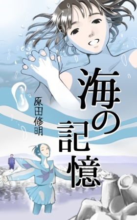
かつて殺した男の孫が、東京を餌場にする。止められるのは、老いた怪人のみ。
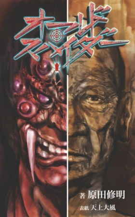
森の中で踊る全裸の女、ゾンビに追われるかぐや姫、思い出の聖少女を追う国家公務員の短編三本立て。
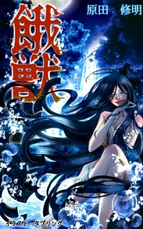
眼の前で「あの家」の男は娘の死体を蹂躙していた。悪夢の故郷に、教師として帰ってくる。いたのは「あの家」の少女。
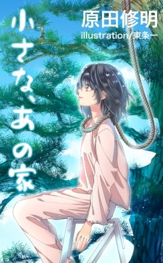
中学一年生の夏川恵子に一目ぼれした腐れ大学生の春田。恵子の父や横恋慕する友人たちとの愚かな戦いの末、函館の存亡を賭けた冒険へと挑む。
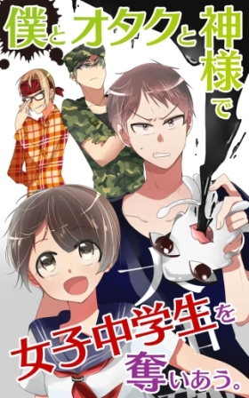
幼なじみで兄の妻である綾を、ずっと想い続けている高校生、赤星清美。ある夏の朝、兄の息子央明と身体が入れ替わっていた。
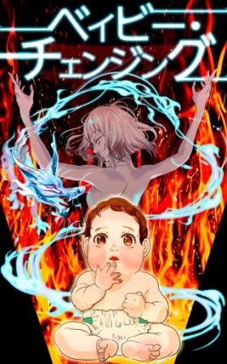
入校初日から輪姦の危機に陥るティアマリア。果たして士官学校で生き残ることはできるのか。
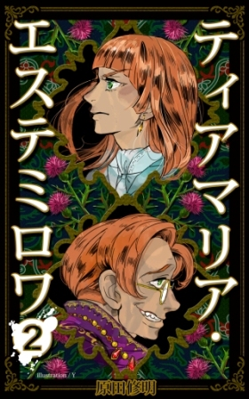
次々と姿を消していく試験選抜者たち。明らかになるリュドミラの過去。
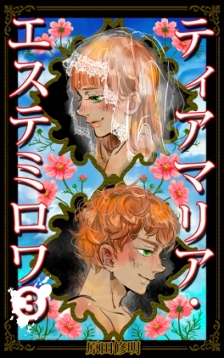
ついにたったひとりの試験選抜者となったティアマリア。共に戦うリュドミラが毒牙に供せられる。
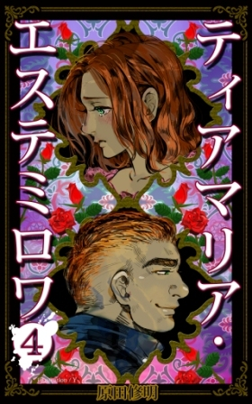
ひとり、またひとりと試験選抜者が帰ってくる。しかし、学校長ヴォルク少将はティアマリアたちに厳しい試練を課す。
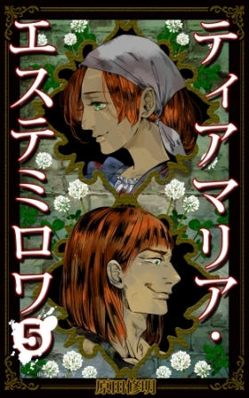
作者初の本格エロ小説。田舎の小学生、ねねが織りなすノスタルジーと官能の世界。
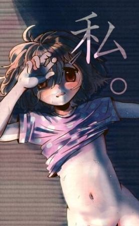
愛知県生まれ。平成２３年より執筆活動を開始。高校卒業以降、大阪、函館、福岡、帯広、東京、熊本と全国を転々とした経験を著作に生かす。主たる活動分野はエンタメ系小説。あらゆる分野からカテゴリーエラーになる物語ばかり書くので、出版社に頼らないセルフパブリッシングを開始。
受賞履歴
ショートショートの花束 7 (講談社文庫)掲載「聖夜の贄」
（龍淵灯 名義）
ＣＭサイト 感動ストーリー大募集 優秀賞「一隅を照らす」
（龍淵灯 名義）
ＢＯＯＫ ＳＨＯＲＴＳ 第２期 入選「猫島」
（龍淵灯 名義）
冲方塾 小説部門 最終候補作品「心霊写真、以前」
ツイッターはこちら
全公開作品にアクセスできるサイト「DRAGON ABYSS」はこちら
書 名 ティアマリア・エステミロワ第一巻
著 者 原田修明
発 行 元 原田修明
著作権者 原田修明
装 画 Ｙ
平成二十八年十二月二十日初版発行